Design and Access Statement
Applicant:
Mrs Esha Bajwa
Site Address:
The Firs Lowdham Road Gunthorpe Nottingham NG14 7ES
Prepared By:
Mr Adam Noble of Noble Architecture on behalf of Mrs Bajwa
Document Version
Revision A - 16ᵗʰ July 2026
1.0 | Introduction
This Design and Access Statement has been prepared in support of a householder planning application at The Firs on Lowdham Road in Gunthorpe. The application site comprises a detached two storey dwelling with the frontage presented in a distinctive early twentieth century Tudoresque style within an exceptionally generous plot. The proposal comprises three modest and carefully differentiated additions. New accommodation is formed over the existing garage within a subservient cat slide roof. A single storey extension knits together the existing built elements of the rear elevation. A new garden room replaces a redundant greenhouse on materially the same footprint. Most of the proposed massing of the scheme is located over ground that is already built upon and the additions have been rigorously disciplined to remain subordinate to the host dwelling and to preserve the openness of the surrounding Green Belt. These are measured claims rather than turns of phrase. The entire new ground floor footprint of the scheme amounts to just 53.65m² square metres against the 235.96m² of built form already standing and it falls almost wholly upon the existing paved terrace with no lawn and no planting bed taken anywhere as quantified and photographically evidenced at Section 10.0.
Project Drivers And Accommodation Needs
The fundamental driver for this application is the evolving needs of the applicant's family. The applicant's parents are advancing in years and their health and mobility are in gradual but unmistakable decline. Within the next year or two they will move into The Firs so that the daily support and companionship they increasingly require can be provided by their own family within a single household. This decision directly reflects the growing necessity for multi generational living within the UK as the cost and strain of formal care continue to mount. The family have chosen the oldest and most humane answer available and will care for their own parents at home. National planning policy and guidance lend strong and explicit support to accommodation of this kind and the full national context together with the policies engaged is set out at Section 15.0. The first floor of the dwelling has been reconfigured around this need as described at Section 4.5 and the further drivers below complete the picture.
A further clear and practical driver for the proposal is the redundant greenhouse that presently occupies the far end of the rear garden. This is a separate outbuilding rather than any form of habitable conservatory and it has long since ceased to serve the horticultural purpose for which it was built. Had it been maintained it would have been a reasonably generous greenhouse but it has fallen into disrepair and is now used only as an ineffective store. Its fully glazed construction makes it wholly unsuited even to that role since everything held within it sits under constant direct light. The applicant does not use the structure in any meaningful way and returning it to a sound and useful condition would be disproportionately expensive for a building that would still serve no real purpose once repaired. The generous storage created by the new accommodation and in particular by the new side extension and its dressing room allows the contents currently held in the greenhouse to be properly rehoused within the dwelling. The derelict and unused structure can therefore be removed and its footprint put to considered use as the garden room described in the following sections which represents a clear improvement over the redundant building it replaces.
Justification For The Design Approach
Ideally accommodation for older people with mobility considerations would be situated on the ground floor. However the ground floor of The Firs already gives its garden facing rooms over to the shared family living spaces this larger household will depend upon and any dedicated ground floor suite would have demanded a new extension pushing into the open garden. The site's Green Belt designation and the applicant's own determination to protect the garden ruled that route out from the very first design discussion. The fairest and most practical solution lies on the existing first floor. The fourth bedroom which presently serves as a children's playroom sits directly ahead at the head of the staircase. The stair rises in a single straight flight and it has already been reviewed for the future retrofit of a stairlift and associated accessibility aids. Two of the remaining bedrooms lie beyond an additional and awkward step around the corner from the landing yet this room alone is reached entirely on the level from the top of the stairs. No other room in the dwelling is so naturally suited to an elderly couple and the full reconfiguration this unlocks is set out at Section 4.5.
The conversion carries one consequence. The playroom has no bathroom of its own and the nearest is the en suite belonging to the master bedroom immediately alongside. The proposal therefore transfers that en suite to the new accessible suite. The door from the master bedroom is blocked up and a new opening is formed from the parents' bedroom so that the bathroom is reached entirely from within their own room. The master bedroom in turn loses its only en suite and re providing it is the sole reason the scheme rises above the existing garage at all. Early design discussions did explore a larger first floor extension. We specifically advised against it to protect the openness of the Green Belt as Section 11.0 records. The settled scheme instead forms the replacement en suite within a new pitched roof over the existing garage footprint and because that roof volume exists in any event it is used to its full sensible extent to provide a generous en suite together with a dressing room rather than leaving half of the space redundant.
Proposed Architectural Enhancements
Beyond the first floor reconfiguration the proposal delivers a series of enhancements that repair the weakest parts of the existing building. The cheaply constructed felt covered flat roof of the garage wing is replaced with a pitched cat slide roof in clay tiles to match the main house lit by two modest dormers so that the poorest structure on the site becomes a settled and permanent looking part of the dwelling. The lacklustre rear elevation receives a comprehensive contemporary refresh in which a calm single storey extension knits the existing built elements together beneath a warm flat roof with slim framed roof lanterns. The derelict greenhouse is removed and a new garden room takes its place on materially the same footprint. On the front side beneath the new cat slide roof a functional dressing room joins the re provided en suite so that the principal bedroom becomes a complete master suite. Each of these design decisions are described in full within the design sections that follow and each replaces something tired or redundant with something considered and well made.
Commitment To Sympathetic Design
As detailed in the subsequent sections of this statement the design ethos is firmly rooted in preserving the distinctive Tudoresque character of the host dwelling and the settled green character of Lowdham Road. The street facing frontage is retained and matched in strict fidelity while the contemporary refresh is reserved for the private garden side where nothing of merit presently exists. The additions are deliberately composed as three subordinate masses that step down and away from the host dwelling and every element works over ground that is already built upon. The Green Belt designation and the village's flood context have been treated as first order design constraints from the outset rather than as hurdles to be argued away after the event. Ultimately this proposal delivers a high quality and thoroughly justified family adaptation that rectifies past unsympathetic additions and rigorously protects the character of the property the street scene and the openness of the Green Belt.
The subsequent sections of this Design and Access Statement provide a comprehensive and granular analysis of the proposed development. Mrs Bajwa and her family have a demonstrable and pressing need for this accommodation and this document outlines the strong planning justification for the scheme. Throughout the design process we have taken a proactive approach to identify potential planning constraints and site sensitivities including the flood risk considerations addressed in detail within this statement. The following sections clearly demonstrate how every potential issue has been carefully considered and how any perceived adverse impacts have been successfully mitigated or entirely eliminated through high quality and data driven architectural design. We respectfully submit that this diligent approach effectively addresses all material planning considerations and paves the way for a positive and expedient determination.
2.0 | Site Context And Assessment
The Firs is a four-bedroom detached two storey dwelling of early twentieth century origin presented in the distinctive Tudoresque decorative frontage style described in full at Section 5.1 with white render black applied framing and dark red plain clay tile roofs.
It stands on the eastern settlement side of Lowdham Road which carries the A6097 along the North Western edge of the village of Gunthorpe. Gunthorpe is a riverside settlement on the north bank of the River Trent within the district of Newark and Sherwood. The dwelling addresses the road from the western end of an exceptionally generous plot whose gardens and paddock land run deep to the east behind the frontage. The subsections below describe the application site itself its immediate neighbours the character of this stretch of Lowdham Road and the wider village in turn.
The property is currently a single-family C3 dwellinghouse and will remain so, thus no change of classification is required.
2.1 | The Application Site And Its Plot
The plot is exceptional in both its size and its quality. The dwelling and its attached garage wing stand at the western end of the parcel addressing Lowdham Road across a mature front garden and a generous gravel forecourt framed by trees and established boundary planting. Behind the house a stone flagged terrace opens onto a sweeping rear lawn edged with organically shaped planting beds and studded with mature ornamental trees. The ageing greenhouse described at Section 1.0 stands towards the northern boundary and is the structure the proposed garden room replaces.
A defining characteristic of the plot is its subdivision. A tall established hedge crosses the parcel at approximately its midpoint and divides the kept ornamental garden serving the dwelling from a large open grass paddock beyond. A private tennis court sits within the paddock immediately beyond the hedge. The paddock lends the plot remarkable depth and openness and it is important to record that no element of the proposed development goes anywhere near it. Every proposed work sits within the developed domestic envelope at the western end of the site as set out at Section 11.0 and the paddock and its openness are left entirely untouched.
Along the southern boundary a private drive annotated as Paddock Access on the existing conditions site plan runs from Lowdham Road down the flank of the plot to the paddock. Although this route can read on mapping as a small lane it is nothing of the sort. It is a private driveway lying wholly within the curtilage of The Firs. The applicant has confirmed that no easements exist over it and that no neighbouring or adjacent property requires or enjoys any right of access along it. It serves the application site alone and it carries no public or third party function whatsoever.
The existing conditions site plan at drawing EB03_T02_D02 & EB03_T02_D03 record the plot and all of these features at survey grade accuracy. That drawing is built upon the high fidelity orthographic Lidar / Full Photogrammetric reconstruction of the site described at Section 17.2 and the aerial view at Figure 2.1 shows the plot and its subdivided arrangement as it stands today.
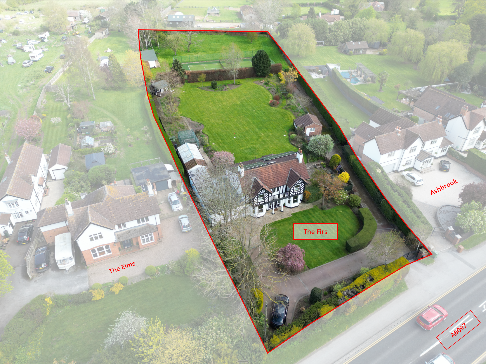
Fig 2.1 - Aerial view of The Firs and its plot
2.2 | The Immediate Neighbours And The Road Frontage
The immediate neighbours of the application site share a clear and consistent character. The Elms adjoins to the north and Ashbrook and Lynwood lie to the south with Marlock House Farm immediately adjoining as recorded at Section 12.0. These are substantial detached family homes of predominantly early to mid twentieth century origin standing in deep mature plots. Their material language is one of render and red brick beneath clay tiled roofs. Their frontages sit behind established hedges garden walls and gravel forecourts and their long gardens run back from the road mirroring the arrangement at The Firs itself. Outbuildings garden rooms and orangeries stand to the rear of several of these properties including the glazed roof lanterns at Ashbrook House and Parkfields noted at Section 12.0 and a number of these outbuildings sit at a slight angle to their host dwellings which is the established local grain the proposed garden room deliberately follows as explained at Section 4.4.
The most striking characteristic of the frontage is what stands opposite the site. Nothing does. The western side of Lowdham Road directly opposite the application site is entirely free of built development and comprises open arable farmland running away towards the horizon. Not a single dwelling faces the site from across the road. The street scene along this stretch is therefore experienced as a one sided ribbon of homes reading against an open rural backdrop and this has two important consequences for the assessment of this proposal. There is no facing neighbour whose outlook or privacy amenity could conceivably be affected by any alteration to the frontage of The Firs. Equally the openness of the countryside opposite is wholly beyond the reach of the proposal which as Section 11.0 records confines itself to the existing developed envelope. The corridor view at Figure 2.2 illustrates this one sided character directly.
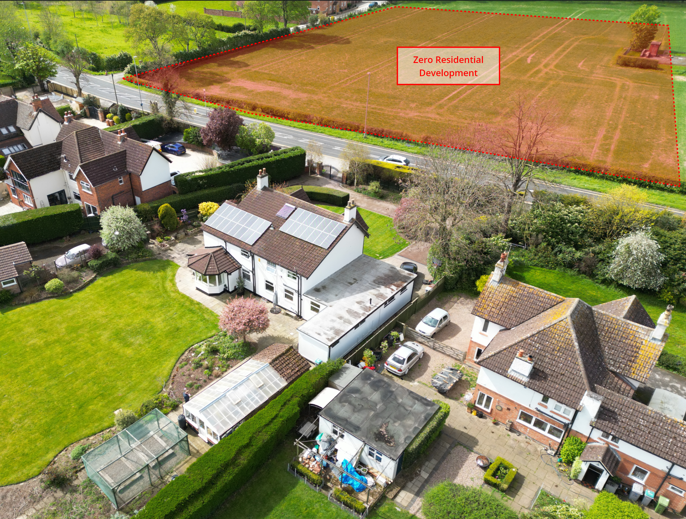
Fig 2.2 - Lowdham Road corridor showing the one sided ribbon of detached homes.
2.3 | The Wider Neighbourhood And The Village Of Gunthorpe
Lowdham Road forms the north western approach to Gunthorpe and carries the A6097 towards Gunthorpe Bridge which remains the only road crossing of the River Trent between Nottingham and Newark. The present reinforced concrete bridge was completed in 1927 and was served by a new by-pass road laid out in the same era. The ribbon of substantial detached homes along this corridor including The Firs itself largely dates from the early and middle decades of the twentieth century and reflects that period of the village's growth. Each home stands individually within its own generous plot and the corridor reads as a soft green edge to the village with hedgerows mature trees and open fields ever present.
The village itself is a compact riverside settlement of approximately 740 residents at the 2021 census with origins recorded in the Domesday Book of 1086 and a name of Old Norse derivation. Its historic core lies along Main Street close to the river where older red brick cottages and terraces gather around the church of St John the Baptist the primary school and the village hall. The riverside is the village's celebrated feature. Gunthorpe Lock and its moorings were constructed in the 1920s and the waterfront now carries a well known cluster of cafes and restaurants that draw visitors from across the county.
The character of the village as a whole is evolved and eclectic rather than uniform. As established at Section 3.1 no part of the village is designated as a conservation area and no single architectural idiom governs it. Buildings of many periods sit comfortably beside one another and the constant thread is not a style but a pattern. Individual homes stand in generous green plots behind mature planting and the settlement meets the surrounding countryside softly. It is precisely this pattern that the proposal respects. The alterations at The Firs change nothing about the plot pattern the green edge or the openness of the corridor and as Section 12.0 demonstrates the sympathetic evolution of individual dwellings is itself the established tradition of this stretch of road.
2.4 | Materials And Construction
The prevailing material palette of the locality is traditional and consistent. Roofs across the neighbouring properties are laid in red and dark red clay tiles with some later concrete interlocking coverings. Walls present as white and cream painted render and warm red brick in varying proportions from house to house. The Firs contributes its distinctive black and white Tudoresque frontage to this palette and its neighbours carry cottage bar and leaded glazing traditions in predominantly white frames. Boundaries are formed of brick walls clipped hedges and timber fencing and driveways and forecourts are finished in gravel throughout. The proposal honours this context through the two part materials strategy set out in full at Section 5.0. The street facing frontage is retained and matched in strict fidelity to the existing palette as tabled at Section 5.2.1 while the garden facing refresh adopts a deliberately quiet contemporary palette that is visible only from within the site itself as tabled at Section 5.2.2.
3.0 | Site Constraints
The following assessment of site constraints has been informed by a comprehensive review of openly available public records and official mapping services. This ensures all relevant planning constraints have been identified and addressed prior to the design phase.
3.1 | Heritage And Conservation
The application site is not situated within a designated Conservation Area. This has been confirmed against the official national conservation area dataset which returns no conservation area designation across the site or its curtilage and it has been reinforced by a belt and braces visual check of the Historic England conservation mapping captured at Figure 3.1. The nearest designated conservation areas lie well beyond the site with Bulcote approximately 1.6 kilometres to the west and the Lowdham Conservation Area approximately 1.7 kilometres to the north west. No part of Gunthorpe village is itself designated as a conservation area as further established at Section 3.3.
The host dwelling is not a statutory Listed Building and no structure within its curtilage appears on the National Heritage List for England. The nearest listed building is The Hall on Main Street which is listed at Grade II under National Heritage List entry 1178643 and which stands approximately 557 metres to the south east within the historic riverside core of the village.
One designated heritage asset does lie within a few hundred metres of the site and it is confronted here directly. The scheduled monument recorded as the Henge 120 Metres South Of Lodge Farm under National Heritage List entry 1017562 and known locally as Gunthorpe henge lies approximately 295 metres to the south east. It is a nationally important Late Neolithic ritual monument which survives as a low external bank and an infilled ditch partly masked beneath river alluvium on the lower ground towards the Trent. The proposed development engages this asset in no way that could cause it harm. Every element of the scheme is confined to the existing developed envelope at the western end of the plot addressing Lowdham Road and no excavation or built form comes anywhere near the monument or its scheduled area. The modest single storey and roof level additions sit several hundred metres away across intervening built form and mature vegetation. They make no meaningful contribution to the setting through which the significance of the monument is appreciated and they disturb neither its buried archaeological interest nor any view of it.
Given this clear physical and visual separation the proposal will cause no harm to the significance or setting of any designated heritage asset and no harm to the character or appearance of the historic environment. The full heritage position across every category of designation is summarised in the quick reference table at Section 3.1.1.
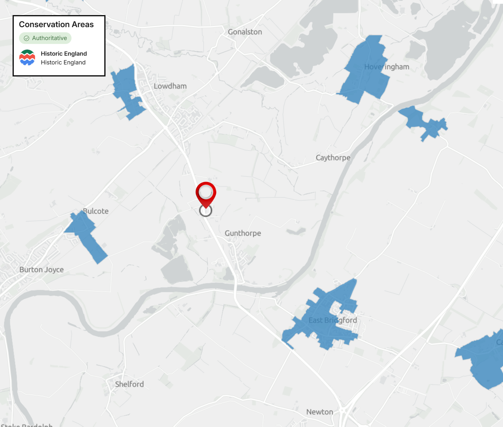
Fig 3.1 - Site As Depicted On Historic England Conservation Assets Map
3.1.1 | Quick Reference Table - Local Heritage Designations
| Designation | Nearest Asset | List Entry | Designated | Distance |
|---|---|---|---|---|
| Conservation Area | Bulcote Conservation Area | Newark and Sherwood DC | 1974 | Approx. 1.6 km |
| Listed Building | The Hall, Main Street, Gunthorpe | Grade II · NHLE 1178643 | 11 Aug 1961 | Approx. 557 m |
| Scheduled Monument | Gunthorpe Henge | NHLE 1017562 | 17 Jun 1998 | Approx. 295 m |
| Registered Park And Garden | Flintham Hall | NHLE 1001080 | N/A | Approx. 5.3 km |
The heritage position was checked on 20ᵗʰ July 2026 against the National Heritage List for England and the official national conservation area dataset. The site is confirmed to lie outside every designated area. The nearest conservation area is Bulcote to the west with the Lowdham Conservation Area next at approximately 1.7 kilometres to the north west. The nearest listed building is The Hall at approximately 557 metres to the south east and the nearest designated heritage asset of any kind is the scheduled Gunthorpe henge at approximately 295 metres to the south east. Straight-line distances are measured from the application site to the nearest boundary of each designated asset and no registered battlefield protected wreck site or World Heritage Site lies anywhere in the vicinity.
3.2.1 | Flood Risk Evaluation
The village of Gunthorpe occupies land alongside the River Trent and parts of the locality fall within the Environment Agency flood warning area for the River Trent at Gunthorpe. The Applicant, Architect & Planning Consultants have engaged with this constraint proactively from the very outset of the design process rather than treating it as an afterthought. The application site lies within Flood Zone 3 as recorded on the Environment Agency flood zones maps and as confirmed by the flood designations attaching to the immediately neighbouring dwellings on Lowdham Road.
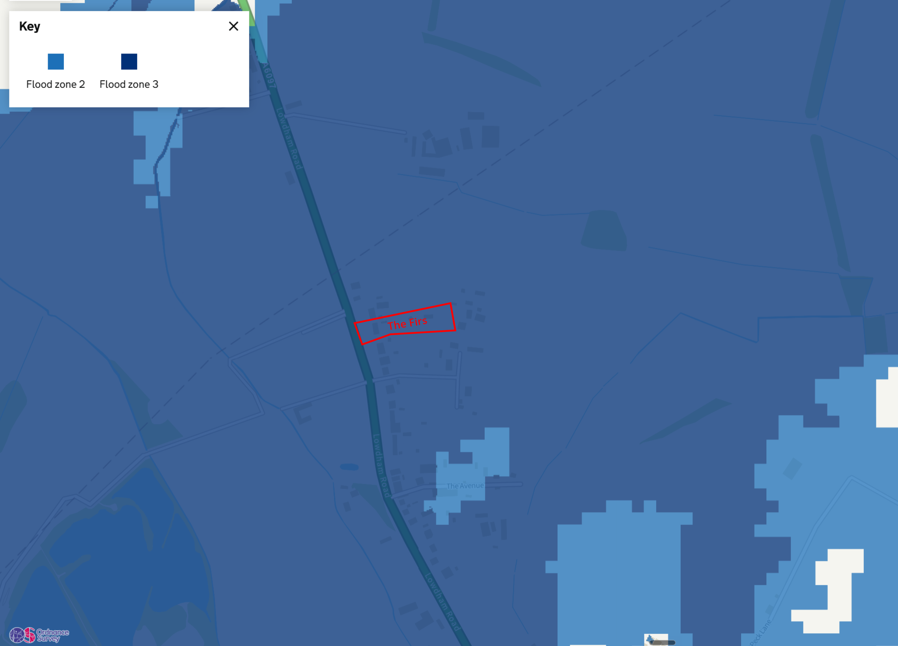
Fig 3.2 - Site As Depicted On Environment Agency Flood Zones Map
3.2.2 | Flood Risk Policy Standards
National planning policy is unambiguous on the treatment of proposals of this nature. Paragraph 176 of the National Planning Policy Framework (December 2024) together with footnote 62 expressly exempts householder development from both the sequential test and the exception test. The principle of alteration and extension to the existing dwelling therefore cannot be resisted on sequential grounds. The determining consideration is instead the safety criteria at paragraph 181 of the Framework. In this Statement we aim to clearly demonstrate to the case officer that the proposal is appropriately flood resistant and resilient and that it introduces no increase in flood risk elsewhere and that any residual risk can be safely managed. Sections 8.0 and 9.0 of this statement set out the site ground investigation evidence together with the full suite of mitigation drainage and resilience measures embedded within the design proposal put forth under this application.
3.3 | Trees And The Tree Preservation Order Position
The position on protected trees has been checked directly and it is entirely clear. A search of the Newark and Sherwood Tree Preservation Order register which is the council's definitive list of confirmed and provisional orders confirms that there is no Tree Preservation Order on the application site and none anywhere on Lowdham Road. The register records only four Tree Preservation Orders in the whole of Gunthorpe parish and every one of them sits within the historic riverside core of the village around Main Street. The nearest lies approximately 842 metres from the site. A deliberately cautious 200 metre radius was taken around the site to be certain and not a single protected tree falls within it. As established at Section 3.1 the site is also confirmed not to lie within a conservation area so the automatic protection of trees that applies within such areas is not engaged. No tree within the application site or its surroundings is subject to any form of statutory protection. The full results of that register search are set out in the table below.
3.3.1 | Quick Reference Table - Local Protected Trees
| TPO Reference | Property | Address | Confirmed | Distance Away |
|---|---|---|---|---|
| TPO N181 · 11/00063/TPO | Chestnut Lodge | 64 Main Street, Gunthorpe NG14 7EU | 08 Jul 1991 | Approx. 842 m |
| TPO N63 · 11/00153/TPO | Trent View | Main Street, Gunthorpe NG14 7EY | 06 Aug 1986 | Approx. 878 m |
| TPO N49 · 11/00144/TPO | Peacock House | Main Street, Gunthorpe NG14 7EU | 09 Jul 1984 | Approx. 842 m |
| TPO N18 · 11/00211/TPO | Fern Cottages | Fern Cottages, Gunthorpe | 16 Jul 1980 | N/A |
The search was carried out against the council's Public Access Tree Preservation Order register on 29ᵗʰ June 2026 using the search terms Gunthorpe, Lowdham Road and The Firs. It returned no order at The Firs and none on Lowdham Road. Straight-line distances are measured from the application site to each order using their respective postcode centroids and every confirmed order in the parish lies several hundred metres away and well beyond the 200 metre radius.
It is worth stating plainly what this means for the scheme. Not a single tree is being felled. The only interaction the proposal has with any tree at all is the careful relocation of one small ornamental cherry which presently stands in the middle of the rear terrace. That tree of the Prunus or flowering cherry family is not removed but lifted and replanted a short distance away within the same garden beside the new terrace TL03 where it will continue to give its spring blossom. This is a positive horticultural move rather than any loss. The relocation can be seen directly in the rear elevation views at Section 5.3 where the cherry appears in the middle of the existing terrace at Figure 5.3 and is shown replanted at the far end of the garden in the proposal at Figure 5.4.
The proposal therefore causes no loss of any tree and no harm to any protected tree because there are none to harm. The established rear lawn and the mature boundary planting are retained in full as set out at Section 13.0 and new native and ornamental planting is added as part of the landscaping and surface water strategy so that the scheme delivers a net gain in planting across the site. There is accordingly no adverse arboricultural impact of any kind.
3.4 | The Green Belt Designation
The application site is covered by the Derby and Nottingham Green Belt. This has been confirmed from the council's constraint records for the site and for its immediate neighbours on Lowdham Road and the position is recorded visually at Figure 3.3. The extract shows this corridor with complete clarity. The defined built envelopes of Lowdham to the North and Gunthorpe to the South are excluded from the belt while every parcel of land between them including the application site is washed over in its entirety. The Firs therefore carries the designation as a simple matter of mapping even though it stands within an established ribbon of substantial dwellings each with numerous past expansions, rather than in open virgin countryside.
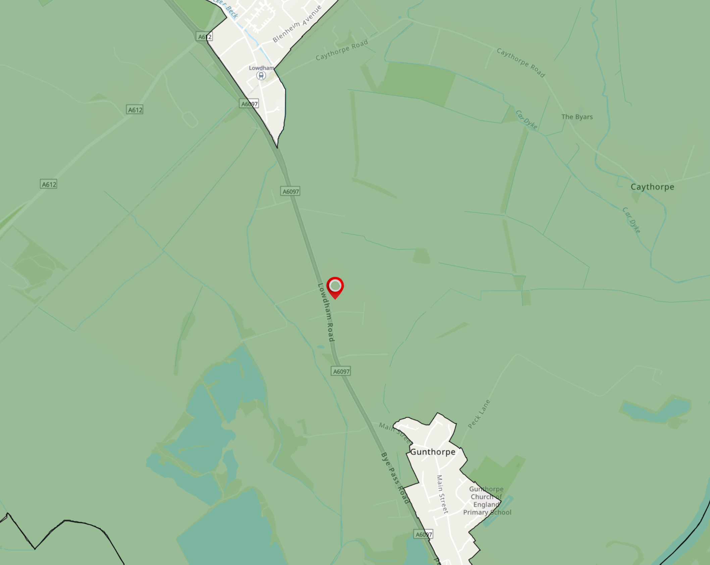
Fig 3.3 - Site As Depicted On The Derby And Nottingham Green Belt Constraint Map
The designation has been treated as a first order design constraint from the very first discussion rather than as a hurdle to be argued away during the application process. It is the reason a ground floor extension into the open garden was discounted at the outset. It is the reason we specifically advised against the larger first floor extension the family's needs might have supported. And it is the reason every element of the settled scheme confines itself to ground that is already built upon within the developed domestic envelope at the western end of the plot. The full Green Belt case is deliberately not argued here because it deserves better than a summary. It is built in two evidenced stages later in this statement. Section 10.0 first quantifies the entire new ground floor footprint at just 53.65 square metres and shows it lying almost wholly upon existing hardstanding. Section 11.0 then demonstrates that the proposal is a proportionate addition that does not amount to inappropriate development and Section 12.0 collates the council's own consistent decisions on this same stretch of road. One fact should be carried forward from this section. The designation was identified before a single line was drawn and every design decision recorded in the chapters that follow was made with the openness of the Green Belt already in consideration.
3.5 | Other Designations And The Development Plan
No neighbourhood plan has been made for Gunthorpe parish. For completeness it is recorded that the made plan for Lowdham belongs to the separate parish of Lowdham and has no application to this site notwithstanding the road from which the site takes its address. The development plan for the purposes of this application accordingly comprises the Amended Core Strategy adopted on 7ᵗʰ March 2019 and the Allocations & Development Management DPD adopted on 16ᵗʰ July 2013. An amended Allocations & Development Management DPD has been submitted for examination but remains unadopted and attracts only limited weight at this stage. The proposal is tested against every relevant policy of the adopted development plan at Section 16.0 of this statement.
4.0 | Design Strategy
4.1 | Usage Of The Proposal
The property will remain a residential dwelling and the application is strictly a householder application. The proposed works are principally concentrated on the rear East facing garden elevation of the dwelling and its immediate garden setting. The new single storey rear extension provides a new open plan living space that opens onto the garden through three large aluminium bi folding doors serving the kitchen area the casual dining area and the casual lounge area in turn so that every zone of the new accommodation enjoys its own direct connection to the terrace. A glazed link connects this new space to the existing bay window so that the old and the new read as one continuous rear elevation. The garden room at the far end of the rear elevation is used as an entertaining space and bar with a pool table and a television wall and it opens directly onto the new terrace. A sunken inset porch between the two elements forms a new secondary entrance which links logically down to the parking area and takes everyday use away from the formal principal entrance on the front elevation. At first floor the proposal serves the central family purpose of this application. The fourth bedroom which presently serves as a children's playroom and sits directly at the head of the staircase becomes an accessible bedroom suite for the applicant's ageing parents served by the existing en suite which transfers across from the master bedroom as set out at Section 4.5. The new accommodation formed above the garage contains the re provided master en suite together with a dressing room so that the principal bedroom becomes a complete master suite. The number of bedrooms remains entirely unchanged at four. No additional bedroom accommodation is created and there is no intensification of the use of the dwelling. The household remains a single family living together across its generations.
4.2 | Space Required By The Proposal
The footprint of the proposal has been disciplined so that new built form is added only where a structure or hardstanding already exists. The new garden room is built in the place of an existing greenhouse structure which is demolished in its entirety and it broadly follows the footprint and the alignment of what it replaces. The single storey extension and its glazed link occupy the rear terrace between the existing bay window and the existing garage and utility wing and they knit these existing elements together rather than colonising new open garden. This discipline is quantified rather than merely asserted. The entire new ground floor footprint of the proposal measures just 53.65 square metres and it falls almost wholly upon the existing paved terrace as measured verified across three independent media and illustrated at Section 10.0. The applicant consciously discounted any expansion into the open rear lawn in order to protect the openness of the garden and of the wider Green Belt as set out at Section 11.0. The same discipline was applied with equal force at first floor level. Early design discussions explored a larger first floor extension to meet the family's changing needs and we specifically advised against it because of the site's Green Belt designation. The settled scheme instead consolidates the entire first floor requirement within a new roof formed over the existing garage so that the accommodation is secured without materially expanding the built envelope in any direction. The proposed veranda at the far end of the terrace has been kept deliberately low open and modest in scale. The Applicant and Planning Consultant's position is that this element falls below the scale at which planning permission would be required and it is included within this statement in the interests of full transparency rather than because consent is considered necessary for it.
4.3 | Scale And Massing
The massing of the proposal is controlled by a series of deliberate features each of which keeps the additions subordinate to the host dwelling. The rear additions are all single storey. The new rear extension carries a warm flat roof rather than a pitch so that its height is held well below the eaves of the two storey host dwelling. The junction between the new extension and the existing bay window is resolved with a fully glazed link. This link simplifies what would otherwise be an awkward abutment and reads as a recessive and transparent joint so that the new solid form appears to sit clear of the original building. The garden room is set down a step from the main floor level so that it reads as a lower and separate structure and this lowering allows reduced door and eaves heights that break the perceived mass. The garden room is also turned through a slight two degree angle away from the house which is addressed in full below.
The one place where the proposal rises above single storey is over the existing garage wing to the front of the dwelling where the re provided master en suite and dressing room described at Section 4.5 are formed within a new pitched roof lit by two dormers. This element has been handled with particular care because it is the only new massing visible from Lowdham Road and the express intention throughout has been to keep it firmly subservient to the principal Tudoresque frontage. The new pitched roof is deliberately set down with its ridge held approximately 750 millimetres below the ridge of the main house and on the front its roof plane is stepped down and broken away from the main roofline so that the eye continues to read the original dwelling as the dominant structure. On the rear or east side the new roof plane is by contrast aligned with the existing roof so that the addition sits cleanly in line with what is already there. Because so much of the wing is now given over to roof rather than wall the addition in fact reads as a smaller and more recessive mass than the flat roofed box it replaces and the two dormers are kept small and positioned so that they do not compete with the gables and bays of the host dwelling. The full appearance rationale for this element is set out at Section 5.0. Taken together these moves ensure both the rear additions and the front garage wing read as cohesive but clearly subordinate layers set against the retained two storey dwelling in accordance with the criteria of Policy DM6 and the overbearing tests of the Householder Development SPD.
4.4 | The Garden Room And The Two Degree Angle
A distinctive characteristic of this stretch of Lowdham Road was identified early in the design process. The outbuildings to the rear of the neighbouring properties sit at a slight angle to their host dwellings rather than square to them. The existing greenhouse at the application site followed exactly this pattern and was set out at approximately a two degree angle. The proposed garden room deliberately retains this two degree angle. The move is not arbitrary. It allows the garden room to read as a separate outbuilding within the established local grain rather than as a rigid continuation of the house while still providing convenient covered access through to the main accommodation. Combined with the step down in level and the reduced height and the dark standing seam material palette described at Section 5.0 the angle allows the garden room to present as its own quiet building in the garden which is the express design intention.
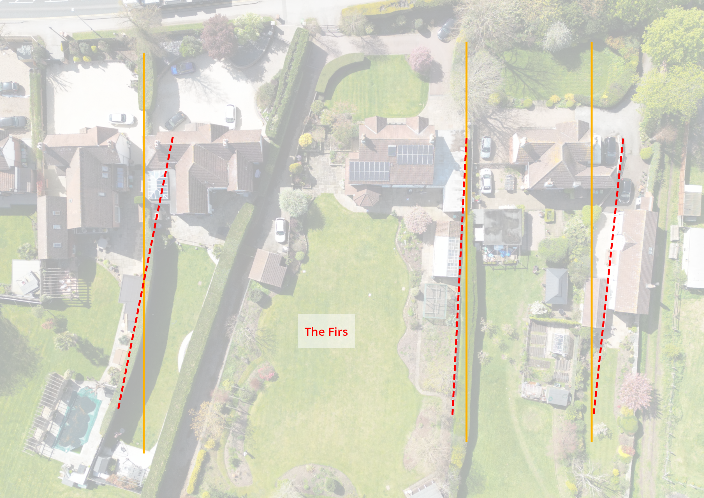
Fig 4.4 - Showing the angular nature of auxiliary and outbuildings along the stretch
4.5 | The First Floor Reconfiguration And The Accessible Accommodation
The only element of this proposal that rises above single storey exists for one reason and it is a profoundly compassionate one. The applicant's parents are entering their later years. Their health is declining their mobility will follow and within the next year or two they will move into The Firs to live with their family. The first floor of the dwelling has been reconfigured around that single fact and every move described below serves it.
The room chosen for the parents is the fourth bedroom annotated as Bedroom 4 on the drawings which presently serves as a children's playroom. Its position could not be better suited to the purpose. It sits directly ahead at the head of the staircase which rises in one straight flight from the ground floor and which has already been reviewed for the future retrofit of a stairlift and associated accessibility aids. Two of the other bedrooms lie beyond an additional and awkward step around the corner from the landing. This room alone is reached entirely on the level from the top of the stairs. A stairlift terminating at the landing would deliver the parents to their own door with not a single further step to navigate and no other room in the dwelling can offer that.
The suite is completed by the adjoining bathroom. The existing en suite serving the master bedroom annotated as Bedroom 1 on the drawings sits immediately alongside the parents' room and the proposal transfers it to them in its entirety. The existing door from the master bedroom is blocked up and a new opening is formed directly from the parents' bedroom so that the bathroom is reached wholly from within their own room. For an elderly couple this arrangement is invaluable. The bathroom will be fitted out for accessible use with generous manoeuvring space and provision for future aids so that it can adapt as the parents' needs change. National guidance is emphatic that this is the right moment to make such provision. The Planning Practice Guidance on housing for older and disabled people advises that it is better to build accessible housing from the outset rather than have to make adaptations at a later stage and records that homes adapted to meet a change in older people's needs allow them to live independently and safely in their own home for as long as possible.
Within the parents' room itself one further alteration completes the conversion. A redundant chimney breast projects into the room from a chimney whose external stack was removed above the roof line many years ago. The residual breast serves no purpose whatsoever and it is removed at both first floor and ground floor level. Because the stack was taken down long ago the removal has no external expression of any kind and the roofscape of the dwelling is entirely unaffected. Its removal frees the full wall line and allows a far more flexible layout in which a large accessible bed can be positioned with clear circulation space to both sides which is precisely what care at home for two elderly people requires.
The transfer of the en suite leaves the master bedroom without a bathroom of its own and re providing it is the sole reason the scheme builds above the garage. The replacement en suite is formed within the new roof over the existing garage footprint together with a dressing room on the front side beneath the cat slide roof. Because the roof volume over the garage is created in any event the space within it is used to its full sensible extent. A generous en suite and a functional dressing room are secured in lieu of leaving half of the volume as dead space and the principal bedroom becomes a complete master suite.
The entire chain of moves therefore begins and ends with the parents. Their need creates the accessible suite. The accessible suite absorbs the master en suite. The master en suite is re provided over the garage with the restraint described at Sections 4.2 and 11.0. Each of these first floor features and alterations are individually recorded at drawing notes FF01 to FF06 within the Supplementary Drawing Notes at the end of this statement so that the officer can follow the reconfiguration directly on the proposed floor plans.
The planning system recognises this need in terms. The national context of elderly care together with the specific policies and guidance that support accommodation of this kind is set out in full at Section 15.0 and it weighs positively and materially in the planning balance.
4.6 | Energy Performance And The Retained Solar Array
The dwelling already carries a roof mounted solar array on the rear plane of the main roof and the proposal retains it undisturbed. The design goes further and treats that installation as an asset to be consciously safeguarded. As Section 4.3 records the new roof formed over the garage wing aligns on the rear with the existing roof plane and this alignment serves a deliberate forward looking purpose beyond its visual cleanliness.
With the applicant's ageing parents anticipated to join the household the energy demand of the dwelling will be materially greater and the applicant has identified a potential future need to extend the photovoltaic array. The rear roof face is the dwelling's principal and most efficient generating plane as the existing array already demonstrates and the aligned run through created by the new wing preserves the natural and least visually intrusive location for any additional panels immediately alongside those already installed.
The alternative of a separate array on the garden room roof was consciously rejected both to keep that structure visually simple and to avoid scattering solar equipment across multiple roofs. Any future panels would instead consolidate onto the single roof plane already characterised by them. This built in flexibility accords squarely with national policy. Paragraph 167 of the National Planning Policy Framework (December 2024) directs that local planning authorities give significant weight to the need to support energy efficiency and low carbon improvements to existing buildings expressly including the installation of solar panels while paragraphs 161 and 168 support renewable and low carbon energy provision and its contribution to a net zero future. The retained array and the roof plane that safeguards its future growth are recorded at drawing notes EE10 and RF01 within the Supplementary Drawing Notes.
5.0 | Appearance And Materials
5.1 | Introduction To Proposed Materials And Aesthetic
The appearance strategy for this application rests on a deliberate and clearly differentiated two part approach and the two halves of the building have been treated as separate design problems with separate answers. The rear and garden facing elevations receive an unashamedly contemporary refresh. The principal front elevation which faces Lowdham Road is treated in an entirely different and deliberately conservative manner that respects and echoes its established Tudoresque character. This distinction is not a stylistic indulgence but a direct and honest response to the very different architectural quality of the two sides of the house.
It is worth being precise about that character. The host dwelling is best described as Tudoresque rather than Tudor. It is a substantial and confident early twentieth century interpretation of the black and white half timbered idiom rather than a genuine period building and it wears that idiom with a grandeur and an eclecticism the authentic article never possessed. The clearest tell is the pair of classical Ionic columns that frame the entrance porch. A classical order sitting quite comfortably within a nominally black and white timbered frontage places the building firmly within the twentieth century revival tradition rather than any medieval or Jacobean lineage. This is a grand and deliberately theatrical composition and it is precisely this quality that the front elevation strategy sets out to protect.
The contemporary approach to the rear is justified by the existing condition of that side of the dwelling. The rear is a lacklustre and piecemeal composition of plain white painted render plain white windows a simple flat roofed garage wing and an ageing greenhouse. It carries none of the architectural quality or the grandeur of the Tudoresque front. The sole exception is the existing octagonal bay window with its red tiled turret roof which is one of the few elements of genuine charm on this side of the house and it is retained in full with its frames renewed in black so that the original feature is kept and brought into the new composition rather than lost to it. Beyond that single retained feature there is nothing of merit on the existing rear elevation worth preserving and a comprehensive contemporary refresh is precisely what this side of the building warrants. The refresh replaces the weakest face of the building with its most considered.
The front elevation by contrast carries genuine Tudoresque character that is well worth keeping and the entire premise of the front strategy is to create a subservient addition that leaves that character undisturbed. The element in question is the existing garage wing which presents very poorly to the street. It is a cheap looking flat roofed box finished with a felt flat roof and it is not even the tidy parapet concealed flat roof adopted at the rear of this scheme. From the front all of its upstands and gubbings are laid bare and the whole structure reads as temporary and expedient rather than as a considered part of a house of this quality. The proposal takes this poor structure and turns it into something that feels permanent and settled. A new pitched cat slide roof finished in plain clay tiles to match the main house is added over the wing and it is lit by two modest dormers. In place of the exposed felt and its clutter the wing gains a proper tiled roof form that reads as though it has always been part of the building and always will be. The result is far more harmonious than the cheap extension it replaces and it repairs rather than harms the street scene. The existing and proposed front elevations are shown at Figures 5.1 and 5.2.
Considerable restraint has been exercised in reaching this point. The design team initially explored carrying the mock Tudoresque panelling across the front of the wing behind a flat vertical wall stepped back by roughly a foot from the main frontage. That option was consciously discounted because it drew far too much attention to the addition and because it would always have read as a poor copy of the genuine frontage given the awkward proportions of the garage beneath it. The same fate met an attempt to carry the spire finials of the main gables across onto the new element which again competed with rather than deferred to the host. The settled approach instead softens the addition by introducing a quieter angular mass in the form of the cat slide roof and the two dormers which have been positioned specifically so that they do not compete with the gables and bays of the main house. Because so much of the wing is now given over to roof rather than wall the addition reads as a smaller and more recessive mass than the flat roofed box it replaces. The roof line is deliberately handled differently on each face as set out at Section 4.3. On the rear or east side it is aligned with the existing roof so that it sits quietly in line with what is already there. On the front it is consciously stepped down and broken away from the main ridge so that the original dwelling unmistakably remains the dominant structure that first catches the eye.
A conscious decision was also taken to introduce no new side facing windows anywhere on the wing and the only side facing windows that remain are the existing ones already present on the dwelling. The privacy reasoning behind this restraint is set out in full at Section 7.0.
The material palette of the refreshed rear elevation has been chosen for quality durability and a calm contemporary character. The existing external walls of the house are finished in a non breathable painted sand and cement render which requires constant maintenance is liable to frost spalling and does not allow the building fabric to breathe. All newly constructed walls will be built in blockwork from damp proof course level and finished in a through coloured monocouche render in a soft light tone such as Chalk or Silver Pearl. Monocouche is a robust modern and low maintenance finish and it represents a marked technical improvement over the existing render. The windows to the rear elevation of the main house are upgraded to proper side hung casement windows with slim glazing bars and every window on the rear elevation is finished in black. The existing first floor window positions are retained throughout so the upgrade changes the quality and finish of the openings rather than the fenestration pattern of the elevation. The three large sets of bi folding doors that open the new living space to the garden are aluminium and are also finished in black. The existing black fascias and soffits of the main house are retained because they tie back to the black and white Tudoresque scheme of the front elevation and the mismatched white fascias and soffits of the former garage wing are brought into line with this same black.
The new single storey extension is roofed with a warm flat roof lit by a three part arrangement of roof lanterns. The lanterns specified are the Korniche system which has been chosen deliberately for its exceptionally slim sightlines and its ultra slim tapered ridge hips and rafters. The Korniche lantern presents far more glass and far less frame than a conventional lantern and it reads as an almost frameless and visually quiet roof feature rather than as the cluttered proprietary rooflights seen elsewhere. The garden room by contrast is expressed as its own distinct building. Its central roof and walls are finished in a dark almost black standing seam metal. The standing seam material and the darker tone are a conscious choice to make the garden room feel like a separate garden structure rather than a further extension of the house. The new secondary entrance sits within a sunken inset porch which is lined in vertical washed light oak slatted panelling to give it warmth and shape and its recessed soffit is lit from within. The overall composition delivers a well integrated and high quality contemporary rear elevation that functions well and is visually attractive in full accordance with Policy DM6 and paragraph 135 of the National Planning Policy Framework.
5.2 | Material Specification Comparison Tables
The material strategy divides cleanly along the two aesthetic languages described above and the specification is therefore set out in two separate tables rather than one. The first table covers the principal West or (Front Elevation) which faces Lowdham Road and which retains its traditional Tudoresque character. The second table covers the East / Rear Garden facing elevation together with the North and South side elevations which carry the contemporary garden facing refresh. Presenting the two palettes separately avoids any confusion between the traditional front and the contemporary rear because the two are deliberately and entirely different. In short the front is retained in white painted render with black applied framing and white windows while the rear and garden facing sides move to monocouche render with a black window and door palette.
5.2.1 | West (Front) Elevation
This is the principal elevation of the dwelling facing Lowdham Road. The palette here is one of retention and careful matching so that the established Tudoresque character is preserved.
| Building Element | Existing Materials | Proposed Materials |
|---|---|---|
| External Walls And Render | White painted render with applied black mock-timber framing in the Tudoresque manner. | Retained, made good and redecorated as required, preserving the white render and the black applied framing. |
| Applied Timber Framing | Black painted applied half-timbering to the front gables and bays. | Retained unchanged. |
| Main Pitched Roof (Front Planes) | Dark red plain clay tiles. | Retained unchanged. |
| Entrance Porch | Open entrance porch framed by a pair of classical Ionic columns. | Retained unchanged. |
| Garage Wing Roof | Cheap felt flat roof with exposed upstands and rooftop clutter, reading as temporary. | New pitched cat-slide roof in plain clay tiles to match the main house, lit by two modest dormers, reading as a permanent part of the dwelling. |
| Dormer Windows | Not applicable. | Two modest new dormers to the garage wing with grey lead-effect cheeks and white-framed windows, each smaller than the existing front bay windows. |
| Garage Wing Front Wall | White render. | White render to match the main house. |
| Garage Doors | White sectional garage door. | White sectional garage door retained, or replaced like for like in white. |
| Front Windows | White UPVC mock sliding sash windows / leaded detailing, including the two-storey front bays. | White UPVC to in a cottage bar style, preserving the traditional frontage. |
| Fascias, Soffits And Rainwater | Black to the main house, white on garage | Retained black to the main house, tying to the black and white Tudoresque scheme. |
5.2.2 | East (Rear) And North & South (Side) Elevations
This covers the rear garden elevation and the two side elevations. The palette here is contemporary throughout, moving to monocouche render and a black window and door palette. No new side-facing windows are introduced; the existing side windows are retained.
| Building Element | Existing Materials | Proposed Materials |
|---|---|---|
| External Walls And Render | White painted sand and cement render. Non-breathable, high maintenance and liable to spalling. | New walls in blockwork from damp proof course level, finished in through-coloured monocouche render in a soft light tone (e.g. Chalk or Silver Pearl). Breathable, robust and low maintenance. |
| Main Pitched Roof (Rear Plane) And Solar | Dark red concrete interlocking tiles carrying the existing roof-mounted solar array. | Retained unchanged, including the existing solar array. |
| Rear Extension Roof | Not applicable. | Warm flat roof with a three-part arrangement of Korniche frameless roof lanterns. |
| Garden Room Roof And Walls | Greenhouse structure to be demolished in its entirety. | Dark, almost black, standing seam metal to the central roof and walls, expressing the garden room as a separate structure. |
| Rear Octagonal Bay Window | Retained octagonal bay with red-tiled turret roof and white frames. | Retained form and tiled turret, reframed in black to match the new rear palette. |
| Rear (East) Windows | White UPVC. | Black-framed side-hung casement windows within the existing openings, carrying the slim horizontal glazing bar rhythm used consistently across the rear-facing elevations and their door sets. |
| Side (North & South) Windows | White UPVC. | Existing side windows retained. No new side-facing windows are introduced, as set out at Section 7.0. |
| Rear Doors | Assorted UPVC doors. | Three large sets of black aluminium bi-folding doors, plus a new inset secondary entrance door. |
| Inset Porch Lining | Not applicable. | Vertical washed light oak slatted panelling with an under-lit recessed soffit. |
| Fascias And Soffits | Black to the main house; mismatched white to the former garage wing. | Black throughout, matching the retained Tudoresque black and white scheme. |
| Rainwater Goods | Black UPVC | Black, to match the fascias and the window and door palette. |
5.3 | Existing Conditions vs Design Proposal Images
The existing and proposed conditions are illustrated below for both the Front (West Elevation )at Figures 5.1 and 5.2 and the Rear or (East Elevation) at Figures 5.3 and 5.4. Existing conditions are shown first in each pair followed by the corresponding proposal.
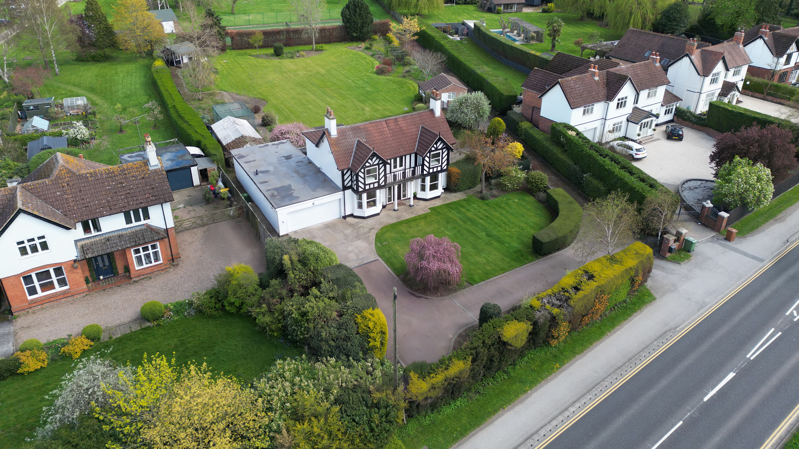
Fig 5.1 - Existing Front Elevation (West Elevation) of the Application Site

Fig 5.2 - Proposed Front Elevation (West Elevation) Showing the Remodelled Garage Wing
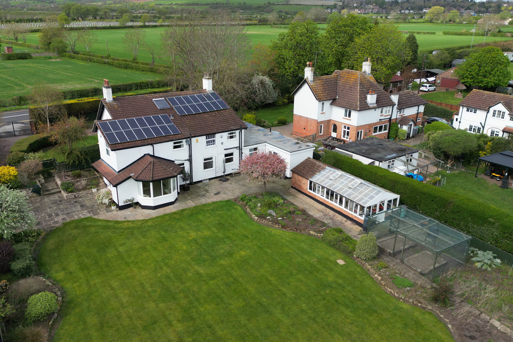
Fig 5.3 - Existing Rear Elevation (East Elevation) of the Application Site
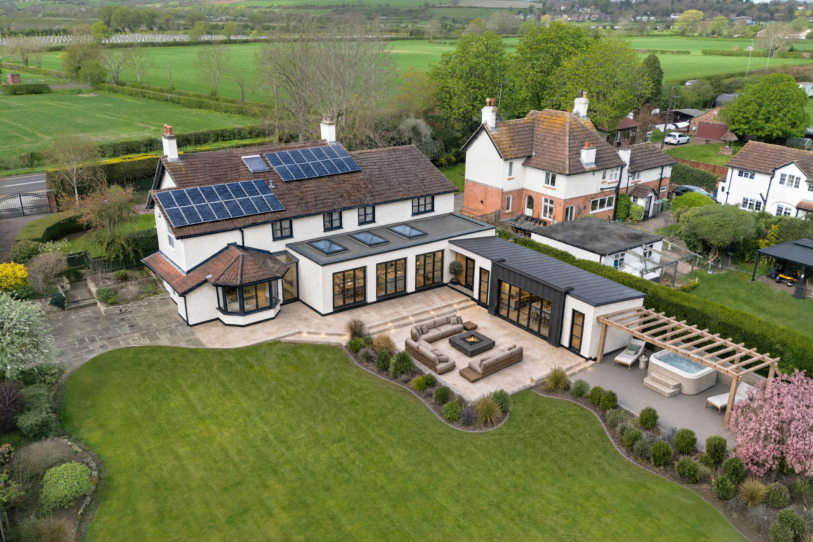
Fig 5.4 - Proposed Rear Elevation (East Elevation) Showing the Contemporary Refresh
6.0 | Massing Strategy And The Composition Of Three Distinct Masses
The massing of this proposal has been composed with as much care as its materials and it warrants its own dedicated examination. The scheme is deliberately arranged not as one agglomerated addition but as three clearly differentiated masses each with its own role its own form and its own architectural identity. The extract from the proposed site plan at Figure 6.1 identifies the three masses under the codes DV01 DV02 and DV03.
The principle underpinning the whole composition is simple, three modest and well mannered masses each deferring to the host dwelling in its own way read as considered evolution where a single large addition would read as bulk.
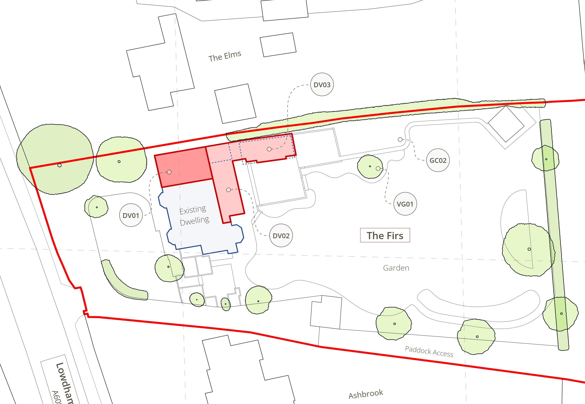
Fig 6.1 - Extract from the Proposed Site Plan Identifying the Three Distinct Massing Elements
6.1 | DV01 - The Two Storey Side Extension Above The Garage
The first mass is the only element of the scheme that rises above single storey and it is handled with corresponding care. New accommodation is formed above the footprint of the existing garage within a new pitched cat slide roof finished in plain clay tiles to match the main house. The choice of a cat slide form is the defining move. The roof sweeps low over the retained garage door so that the wing presents to the street principally as quiet tiled roof rather than as wall and the two modest dormers sit within that roof plane rather than upon it. The front facing appearance is deliberately traditional so that the wing matches in with the existing style and character of the host dwelling and the composition consciously softens the front massing of what is today a flat roofed box laid bare to the street. The new ridge is held approximately 750 millimetres below the main ridge. On the front the roof plane is stepped down and broken away from the main roofline so that the original dwelling unmistakably remains the dominant structure while on the rear the new plane aligns with the existing roof. Because so much of the wing is now given over to roof rather than wall the addition reads as a smaller and more recessive mass than the structure it replaces and Figures 5.1 and 5.2 demonstrate this directly. The accommodation this roof contains is the re provided master en suite and dressing room whose family purpose is set out in full at Section 4.5.
6.2 | DV02 - The Single Storey Rear Extension
The second mass is the connective aspect of the scheme and it is deliberately the calmest of the three. The single storey rear extension occupies the ground between built elements that already stand at the rear of the dwelling and it knits them together rather than colonising open garden. Its parapet concealed warm flat roof is held well below the eaves of the two storey host so that the original dwelling rises clear above it on every view. Its junction with the retained octagonal bay is resolved with a glazed link that reads as a recessive and transparent joint so that the new solid form appears to sit clear of the original building. Its three Korniche roof lanterns present as almost frameless glass and introduce no competing roof forms. Its elevations are through coloured monocouche render opened by black aluminium glazing which gives the mass a calm horizontal emphasis entirely distinct from the vertical gabled language of the host. This mass is deliberately a different form from DV01. Where the side extension is pitched tiled and traditional because it addresses the street the rear extension is flat crisp and contemporary because it addresses only the private garden. That differentiation is the two part appearance strategy of Section 5.1 expressed in three dimensions.
6.3 | DV03 - The Garden Room
The third mass is deliberately expressed as a building in its own right and this is the point on which the composition turns. The garden room stands on the rough footprint of the removed greenhouse at the far end of the rear composition. It is set down a step from the main floor level with reduced eaves and door heights so that it reads as a lower and separate structure. It is turned through the two degree angle explained at Section 4.4 following the established local grain in which rear outbuildings sit slightly askew of their host dwellings. Above all its central roof and walls are finished in a dark almost black standing seam metal that detaches it visually from the white rendered house and rear extension. To the garden side it presents a calm tripartite composition in which the central standing seam section contains a large glazed screen while the flanking sections are finished in monocouche render each carrying a single slim window. The structure is set down with the falling ground of the site so that it sits naturally as the lowest built element of the scheme. The garden room is not meant to read as a further extension of the dwelling and every design decision made upon it ensures that it does not. It reads instead as its own structure within the long local tradition of garden rooms orangeries and outbuildings recorded at Sections 2.2 and 12.0.
6.4 | The Composition Read As A Whole
Read together the three masses form a deliberate hierarchy that steps down and away from the host dwelling in both height and formality. A traditional pitched wing defers to the street. A calm flat connective mass defers to the garden elevation. A distinct dark pavilion defers to the garden itself. Each mass is differentiated from its neighbour by form height and material precisely so that no single large addition is ever read and the stepped silhouette breaks the new accommodation into parts that the eye takes in comfortably. Read from the south along the private Paddock Access drive the proposal presents this entire hierarchy in a single view. The two storey host dwelling stands tallest. The parapet of the rear extension and its glazed link sits well below it. The timber lined porch recesses further still and the garden room set down with the falling ground finishes lowest of all so that the composition tapers gently into the garden rather than presenting any abrupt or competing bulk. From every viewpoint the two storey dwelling remains the dominant structure and every new element reads as a subordinate layer set against it. The proposed views at Figures 5.2 and 5.4 evidence this outcome from the two public and private aspects that matter most. The composition therefore functions well and is visually attractive in accordance with paragraph 135 of the National Planning Policy Framework and it satisfies the design and subservience criteria of Policy DM6 and the overbearing tests of the Householder Development SPD as addressed at Sections 4.3 and 15.0.
7.0 | Protection To Neighbours Privacy And Amenity
7.1 | Site Placement And View Lines
The proposal has been designed so that it creates no new views towards any neighbouring property that did not already exist. This is the single most important point on amenity and it holds true on every elevation. Nothing in the scheme opens a new line of sight into a neighbour's garden or windows.
On the front elevation the only new openings are the two dormer windows serving the roof space over the garage wing. These are modest in size and are in fact smaller than the existing two storey bay windows already present on the front of the dwelling. They face out across the applicant's own front garden and driveway towards Lowdham Road exactly as the existing front windows do and they introduce no new or more intrusive outlook than the frontage already has. They therefore raise no overlooking issue whatsoever.
No new side facing windows are proposed anywhere on the scheme. The side facing windows that remain at ground floor level are the existing windows already present on the dwelling and their outlook is entirely unchanged. The question of side facing windows at first floor level was actively considered. The possibility of introducing first floor side windows was raised on more than one occasion during the design meetings and it was on each occasion advised against by both the planning consultant and the Architect precisely because such windows would introduce a new and direct line of sight towards the immediately neighbouring dwelling and would erode that neighbour's reasonable expectation of privacy. That advice was accepted by the applicant and no first floor side windows form any part of this application. The protection of neighbouring privacy is a requirement of Policy DM6 of the Allocations & Development Management DPD and of the privacy tests at paragraphs 7.11 to 7.12 of the Householder Development SPD (2014) and the scheme has been shaped from the outset to honour it.
The elevation facing the immediately neighbouring dwelling to the north demonstrates just how far this principle has been carried and it is deliberately the quietest face of the entire proposal. The new first floor accommodation over the garage wing takes all of its daylight from the two front dormers so the roof plane presented towards that neighbour remains entirely unbroken with no rooflights or openings of any kind at high level. The single storey rear extension presents to the same boundary only a low calm parapet line with no openings and no activity and the roof lantern above it reads as a slim almost frameless glazed profile that is entirely incapable of generating any overlooking. The garden room goes further still. Its entire flank towards that neighbour is a completely blank windowless wall beneath a low dark standing seam roof. The structure it replaces is the existing greenhouse whose part glazed flank presently faces that very boundary so the exchange delivers a clear improvement in the neighbouring outlook as well as in the appearance of the site. The scheme therefore grows meaningfully in accommodation while presenting almost nothing new to its closest neighbour and the complete treatment of this boundary is recorded within the Northern Elevation Design Notes of the Supplementary Drawing Notes at the end of this statement.
7.2 | Window Placement And Overlooking Mitigation
Only a single new window is introduced on the rear or garden facing elevation at first floor level and it serves the re provided master en suite within the new accommodation over the garage wing. This window is specified in obscured glazing. Although it is a generously sized window and although it faces out only over the applicant's own rear garden the use of obscured glass means it affords no meaningful view out and therefore introduces no overlooking of the neighbouring garden to that side. Even if the adjoining occupier were to be concerned that a new first floor opening on this side might add a fresh view cone into their garden that concern is completely answered by the obscured glazing.
There is accordingly zero degradation to the neighbour's privacy from this window. It bears emphasis that this is the sole new first floor opening anywhere on the rear elevation because the existing first floor window positions of the main house are retained without alteration and the upgraded casements described at Section 5.0 simply repeat the outlook the dwelling already enjoys. This approach is expressly endorsed by paragraph 7.12 of the Householder Development SPD which accepts obscured glazing as an appropriate means of protecting privacy and the applicant is content for the obscured glazing of this bathroom window to be secured by a suitably worded planning condition.
Taken together with the complete absence of any new side facing windows and the modest front dormers described above the scheme delivers a new floor of accommodation with no material overlooking of any neighbouring property.
7.3 | Overshadowing Daylight And The Solar Orientation Of The Site
Overshadowing was not assessed after the design was fixed. It shaped the design from the very first massing study and the solar orientation of the site is the reason the scheme takes the form it does. The north point on the proposed site plan Drawing EB03_T02_D03 records the arrangement precisely. The principal elevation faces west onto Lowdham Road. The rear garden runs east towards the paddock. The Elms adjoins to the north and Ashbrook and Lynwood lie to the south beyond the private Paddock Access drive. In this latitude the sun crosses the southern sky and throughout the useful hours of the day shadows are cast towards the north the east and the west. Those simple facts determine where overshadowing could in principle arise and the scheme answers each direction in turn.
To the South no overshadowing is geometrically possible. The sun stands between the site and the southern neighbours for the whole of the working day so every shadow the proposal casts falls away from Ashbrook and Lynwood and never towards them. The transient obliques of early morning and late evening expire across the private Paddock Access drive and the established boundary planting long before they could trouble any neighbouring window or garden. The nearest new built form on this side is in any event the single storey garden room which stands low and set down with the falling ground while the only two storey element of the scheme sits at the opposite northern end of the composition with the full bulk of the host dwelling standing between it and the southern boundary.
To the north the position was examined with corresponding care because this is the one direction in which new shadow could in principle be thrown. Three facts dispose of the concern. First the two storey side extension rises over the existing garage with its ridge capped approximately 750 millimetres below the existing main ridge. The host dwelling already stands two storeys tall at this same northern end of the composition and has done for the best part of a century. The new roof therefore sits within the daily shadow envelope the dwelling already casts and extends the reach of that envelope only marginally beyond the flat roofed garage that stands there today. Secondly the ground immediately beyond the shared boundary is occupied not by any window garden or sitting area but by the neighbouring property's own gravel driveway and parking frontage.
The Householder Development SPD directs at paragraph 7.16 that regard be given to the positioning of a proposal relative to the principal windows of habitable rooms and to private amenity space and neither lies within reach of the modest additional shadow this roof could cast. Thirdly the established boundary treatment along this flank already interrupts low angle light at precisely the times of day when shadows run longest.
The garden room stands on the rough footprint of the existing greenhouse with reduced eaves and door heights and it is set down a further 325 millimetres with the falling ground so that its massing at the boundary remains of the same modest single storey order as the glazed structure it replaces. From the neighbouring side it reads as little more than a garden wall beneath a slender metal roof.
The single storey rear extension is incapable of overshadowing any neighbour at all. Its parapet concealed flat roof is held below the first floor windows of the host dwelling and it sits towards the centre of the plot width between built elements that already stand. A shadow thrown from a parapet of this height is measured in single metres and expires within the applicant's own terrace and planting beds. To the west the land across Lowdham Road is open farmland with not a single dwelling facing the site and to the east lies nothing but the applicant's own garden and paddock. In neither direction does a receptor for overshadowing even exist.
The SPD records at paragraph 7.15 that the right to light is not a planning issue. The applicant nonetheless notes that the scheme spares even that private interest because no principal window of any habitable room in any neighbouring dwelling will experience any material loss of daylight as a result of this proposal. The stepped massing hierarchy at Section 6.0 in which every new element sits lower than the last was conceived with precisely this outcome in mind. The scheme accordingly satisfies the overshadowing tests at paragraphs 7.15 and 7.16 of the Householder Development SPD and the amenity criteria of Policy DM6 and it introduces no material overshadowing of any neighbouring dwelling or any private amenity space whatsoever.
8.0 | Ground Conditions And Site Soil Investigation
The surface water strategy for this application has not been designed on assumption. Before committing to any drainage approach the applicant and design team resolved to establish a firm and independently checkable understanding of the ground beneath the site drawn both from the published geological record and from direct physical investigation within the curtilage itself. This section sets out that evidence in full. It begins with the published geology of the Trent terrace on which Gunthorpe stands and then presents the findings of the soil investigation undertaken on site. The evidence assembled here directly underpins the flood and surface water drainage strategy at Section 9.0 and the two sections should be read together as a single continuous case.
8.1 | Published Geology And Soil Mapping
British Geological Survey 1:50,000 Sheet 126 (Nottingham) and its accompanying memoir (Howard et al., 2009) map the site on the Holme Pierrepont Sand and Gravel which is the lowest river terrace of the Trent. This terrace overlies the mudstones and siltstones of the Gunthorpe Formation of the Mercia Mudstone Group for which Gunthorpe village is itself the type locality. The published record is notably favourable. The memoir records that ground on the Gunthorpe terraces remained largely dry during the major November 2000 flood and published engineering geology accounts of the Nottingham district place the terrace surface approximately 2.5 metres above the adjacent floodplain alluvium. The terrace gravels are typically capped by topsoil over sandy or silty clay generally less than 1 metre thick (Spenceley, 1971, cited in the memoir). Cranfield University Soilscapes mapping independently describes the local soils as freely draining slightly acid and loamy. Every strand of the published record therefore points towards the same conclusion. The site occupies an elevated free draining gravel terrace whose upper soil profile is inherently well suited to the shallow infiltration approach set out at Section 9.0.
8.2 | The On Site Trial Pit Investigation
Rather than rely on the published record alone the applicant went further and commissioned a direct physical investigation of the soil conditions within the curtilage itself. A surveyor was instructed to attend site and hand excavate two trial pits at two separate locations across the rear garden. Two locations were deliberately chosen rather than one so that the investigation would provide a genuinely firm grasp of the soil conditions across the site rather than a single unrepresentative snapshot. The two investigation points are coded GC01 and GC02 which stand for Ground Conditions 01 and Ground Conditions 02 and their positions are recorded on the site plan at Figure 8.1.
It is important to be absolutely clear about what Figure 8.1 shows. The plan records the existing site and the existing dwelling exactly as they stand today and it does not illustrate the proposed development in any way. Its sole purpose is to record with complete transparency precisely where within the site the ground was opened and inspected so that both the assessing officer and the Environment Agency can see exactly where the soil samples were taken. Point GC01 lies towards the dwelling end of the rear garden a short distance beyond the existing terrace. Point GC02 lies further out into the garden to the north east within the very area where the proposed landscaping scheme forms its new planting beds. It is beneath the planting beds in this area that the buried soakaway network described at Section 9.0 is to be formed and GC02 was positioned there quite deliberately so that the ground was tested in precisely the location where the drainage strategy will call upon it.
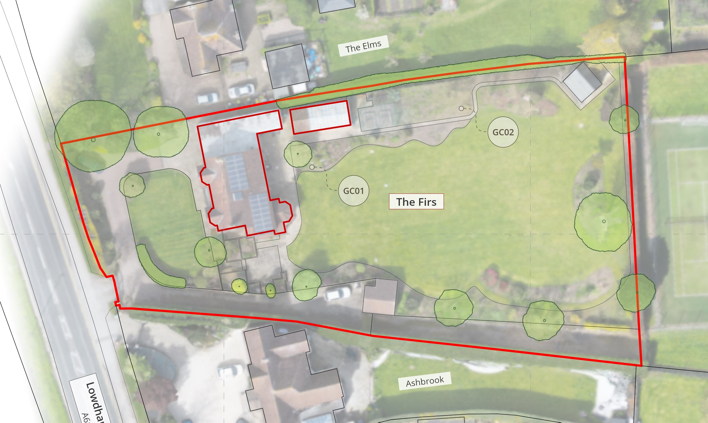
Fig 8.1 - Existing Site Plan Recording the Locations of Soil Investigation Points GC01 and GC02
Both pits were dug entirely by hand with a spade and each was taken down to the practical depth achievable by careful manual excavation. Pit GC01 reached a depth of approximately 650 millimetres and pit GC02 a depth of approximately 550 millimetres. The attending surveyor recorded the soil in both pits as generally gravelly and sandy loam of visibly free draining character. This finding is entirely consistent with the published Soilscapes classification and with the mapped terrace deposits described at Section 8.1 and crucially the two pits corroborate one another across two separate locations within the site.
8.3 | Findings And Their Significance For The Drainage Strategy
The critical finding is as significant for what was absent as for what was present. Neither pit encountered mudstone shale or any other impenetrable stratum at any point within the depths investigated. Nothing whatsoever was found in either excavation that would frustrate impede or undermine the shallow soakaway strategy proposed beneath the new planting beds. The soil conditions encountered to the depths dug were in short exactly what a shallow infiltration strategy requires. Free draining gravelly sandy loam was present throughout both profiles and because the proposed soakaway network spreads laterally over a generous area beneath the planting beds rather than plunging to depth the strategy relies upon the very soils this investigation has proven rather than upon deeper conditions that remain unproven. Should the system ever need to work harder its answer is to spread further outwards through that same proven free draining material which allows any runoff to be mitigated across a larger area rather than concentrated at a single vulnerable point.
The two pits confirm the upper soil profile only and no claim is made beyond that. Conditions at greater depth and in particular groundwater have been assessed from the published record set out at Section 9.2 and will be verified by formal infiltration and groundwater testing prior to commencement as committed at Section 9.5. This is precisely the calibrated approach the council's own Strategic Flood Risk Assessment calls for at paragraph 4.10.3 which classifies the soakaway potential of the river gravels as uncertain until local intrusive investigation is undertaken. The applicant has begun that local investigation voluntarily and ahead of any request from the local planning authority and has committed to completing it to a recognised national standard before any works commence.
9.0 | Flood Risk Mitigation And Surface Water Drainage Strategy
9.1 | Planning Context And The Scope Of The Works
The proposal comprises a single storey flat roofed extension infilling the ground between built elements that already stand at the rear of the dwelling together with new accommodation formed above the footprint of the existing garage, together with the replacement of the redundant greenhouse with a new garden room on materially the same base and associated terracing and landscaping. The only previously undeveloped ground to be built upon is the modest infill area between these existing built elements and every other element of the scheme re-uses a footprint that is already developed. The entire new ground floor footprint of the scheme including that infill measures just 53.65 square metres and it falls almost wholly upon the existing impermeable terrace as quantified at Section 10.0. The scheme also introduces extensive new planting beds so the net effect of the proposal is to increase the permeable vegetated proportion of the curtilage relative to the existing arrangement. The starting point for any flood assessment of this scheme is therefore that it hardens less ground than it greens.
The works constitute householder development. As established at Section 3.2 paragraph 176 of the National Planning Policy Framework (December 2024) together with footnote 62 expressly exempts development of this nature from both the sequential and exception tests and the Planning Practice Guidance confirms the same position. The council itself has already applied precisely this reasoning on this corridor in its committee report for application 20/00889/FUL at 17 Gunthorpe Road Lowdham. The principle of alteration and extension of the existing dwelling is accordingly established and the determining consideration is the safety criteria at paragraph 181 of the Framework. The applicant has nonetheless prepared the assessment within this statement to the full standard the council has applied to comparable proposals on this corridor in recognition of the village's documented flood history. Nothing has been left to assumption.
9.2 | Flood Risk Context And The Village Record
Recorded River Trent flood levels at Gunthorpe are 18.00 metres AOD from November 2000 and 17.08 metres AOD from December 2002 as set out at Table 4A of the council's Strategic Flood Risk Assessment (Level 1, 2009). During Storm Henk in January 2024 the county council's statutory Section 19 investigation records that eleven properties in the village flooded internally. Ten of those eleven cases were attributed to rising groundwater emerging through floor slabs while the Trent was surcharged and only one flooded directly from the river. This evidence has directly shaped the drainage philosophy of the scheme. The design deliberately places no reliance on deep infiltration because the published record demonstrates that groundwater in the village can rise towards the surface during precisely the conditions in which drainage performance matters most.
The groundwater record reinforces the point. The BGS memoir records that groundwater within the Trent terrace and alluvial deposits is relatively shallow and in direct hydraulic continuity with the River Trent. Publicly available BGS borehole records on the same terrace system over the same Gunthorpe Formation bedrock record groundwater strikes at 1.50 metres below ground level (BGS reference SK63NW63) and at 1.83 metres below ground level (BGS reference SK63NW64). Both records are reproduced in the Flood Risk Assessment prepared by Townsend Water Engineering in May 2024 for a comparable terrace site at Radcliffe Road Holme Pierrepont which discounted deep infiltration on that very basis. The council's Strategic Flood Risk Assessment classifies the soakaway potential of the river gravels as uncertain at paragraph 4.10.3 because neither their thickness nor their groundwater levels are known without local intrusive investigation and classifies the underlying Mercia Mudstone as a non aquifer with little to no soakaway potential at paragraph 4.10.4. The drainage design set out below has been developed from and is deliberately conservative against this published evidence.
9.3 | Flood Resilience And Safe Access And Egress
The scheme adopts as a complete package the resilience measures the council has already accepted in permitting 20/00889/FUL on this corridor. Finished floor levels will be no lower than those of the existing dwelling and the design accommodates the standard imposed by condition 04 on that permission namely ground floor finished floor levels a minimum of 300 millimetres above the 1 in 100 year flood level plus a 30% climate change allowance or no lower than existing whichever is the higher. Electrical services and the consumer unit within the new accommodation will be set at high level and low permeability flood resilient materials will be used at low level. Non return valves will be fitted to any new below ground drainage connections so that flood water cannot back up through the drainage system into the dwelling. The council has already judged this exact package acceptable a few hundred metres from the application site and the applicant adopts it in full.
On access the client's initial brief sought level thresholds throughout. On our advice this was revised. External levels are instead arranged as a deliberate sequence of steps rising from the lower decked terrace up to the outdoor seating terrace then a second step up to the upper terrace serving the side path and the new inset porch and a further step up into the house itself. Each rise adds freeboard between external ground and internal floor level. At every interface where a building meets a level change a discreet co-slot channel drain of the Aco or equivalent type intercepts surface water and conveys it to the soakaway network described at Section 9.5. The terraces themselves follow the slight natural gradient of the site so that surface water is passively shed down and away from the dwelling rather than towards it. These are entirely passive measures which require no mechanical intervention and no human action in order to perform.
The proposal does not reduce means of escape in a flood event and in truth it improves them. The extension retains and adds multiple door and window openings at several points and levels around the dwelling giving occupants a genuine choice of exit routes to higher ground. This matters locally. The council refused application 25/01539/FUL at Lodge Farm Lowdham Road in December 2025 precisely because safe access and egress in a flood event had not been demonstrated. No such deficiency arises here and this statement demonstrates the point directly rather than leaving it open. Where the refused scheme failed to evidence safe escape this scheme positively multiplies the routes available and pairs them with the stepped freeboard described above.
9.4 | The Terrace Modification And Water Shedding Strategy
The external terracing has been designed as a working component of the flood strategy rather than as passive hard landscaping. The existing terrace makes the case for this intervention by itself. It carries no dedicated drainage provision it relies wholly upon surface runoff and its measured fall runs back towards the dwelling rather than away from it as evidenced at Section 10.3. The rear terrace is arranged as three distinct levels which graduate progressively down and away from the dwelling. The uppermost level sits immediately against the house and serves the new rear extension and the inset porch. The middle level carries the sunken social seating area aligned on the garden room. The lowest level serves the veranda and jacuzzi area at the far end of the composition.
Crucially the uppermost level is elevated above the existing terrace level so that the immediate apron of the dwelling forms a slight raised platform. This platform graduates the entire external composition away from the building and it presents a continuous hard defensible edge at its perimeter. Should a flood warning ever be issued for the village that edge provides a clean straight line against which sandbags can be swiftly and effectively deployed which gives the occupants a modest but genuinely useful additional line of defence at the very foot of the building. Each subsequent level then steps down and away so that surface water is shed by gravity away from the dwelling at every stage and never towards it. At every threshold and at every interface where a building line meets a level change the co-slot channel drainage recorded at drawing note DR02 intercepts and captures runoff before it can pond against the building.
The finish of the lowest level records a deliberate and instructive design decision. The upper two levels are laid as two areas of paved hardstanding and the applicant's firm and clearly expressed preference was for that same consistent tiled finish to continue across all three levels. On our advice this was revised. The lowest level is instead to be finished in timber/composite decking laid with deliberate clear gaps between the boards over a free draining substrate so that rainfall landing upon it passes straight through into the ground beneath rather than being shed off yet another impermeable surface. The applicant accepted this change against their own clearly stated aesthetic preference and it should be read as a further conscious concession made in favour of drainage performance. The proposal thereby converts what would have been additional hard runoff area into a permeable surface that contributes positively to the surface water budget of the site.
This terrace strategy operates as one integrated system with the drainage measures set out at Section 9.5 and recorded in the Supplementary Drawing Notes at the end of this statement. The planting beds that wrap the terrace levels carry the buried lateral soakaway network recorded at drawing note DR01. The co-slot threshold drainage serving every door opening including the main rear extension the inset porch and the garden room is recorded at drawing note DR02. The three level terrace arrangement itself is recorded at drawing notes DR03, TL01, TL02 & TL03. The ground beneath was proven by the trial pits recorded at drawing notes GC01 and GC02 and the relocated ornamental cherry that roots directly within the soakaway zone is recorded at drawing note VG01.
9.5 | The Surface Water Drainage Strategy
Given the published evidence of shallow river linked groundwater a conventional deep soakaway would be unreliable here and the design team has deliberately declined to specify one. The strategy instead comprises a shallow laterally extensive infiltration and attenuation system approximately 1 metre deep spread beneath the new planting beds of the proposed landscaping scheme. This is the precise location tested by trial pit GC02 as recorded at Figure 8.1. The shallow approach keeps the base of the infiltration zone as high in the soil profile as practicable which maximises separation from seasonal groundwater and it exploits the free draining gravelly sandy loam proven by the site investigation at Section 8.0.
Because the system spreads laterally over a generous area rather than concentrating discharge at a single deep point it can accept and dissipate runoff even in sustained wet weather and its capacity can be extended simply by spreading further through the same proven material. All new hard surfaces and every co-slot threshold drain discharge to this system and no new surface water connection to any public sewer is proposed anywhere on the scheme.
The planting beds above the infiltration zone are stocked with deliberately thirsty high water demand species and the existing ornamental cherry described at Section 3.3 is relocated so that it roots directly within the soakaway zone. Stored stormwater is therefore drawn down between events by evapotranspiration as well as by infiltration in the manner of a bioretention system and the extensive new planting delivers a corresponding biodiversity benefit alongside its drainage function. The proposed rear view at Figure 5.4 shows these generous planting beds wrapping the new terraces exactly as the drainage strategy requires. The landscaping and the drainage are in other words one integrated system rather than two competing demands on the garden. This is precisely the multifunctional form of sustainable drainage that paragraph 182 of the National Planning Policy Framework (December 2024) asks development to incorporate delivering benefits for biodiversity and amenity alongside the control of runoff.
For completeness the applicant notes that this restrained infiltration led approach compares favourably with the engineered discharge solutions recently accepted in the locality. The Townsend Water Engineering assessment at Holme Pierrepont adopted a restricted offsite discharge of 17.2 litres per second and the MEC Consulting Group Flood Risk Assessment of February 2026 for Copperbeech Farm at Lowdham adopted 25 litres per second. The present scheme by contrast seeks as its primary strategy to dispose of its modest surface water arisings entirely within the site through infiltration and planting without reliance on any offsite discharge at all. The applicant is thereby volunteering a standard of surface water management that goes beyond what the council has accepted from far larger schemes nearby.
Prior to commencement infiltration testing to BRE Digest 365 in accordance with BS 8582 and CIRIA guidance together with a groundwater level check will be undertaken at the final soakaway locations and the system will be sized accordingly.
Should measured conditions prove unsuitable for infiltration the design will default to attenuation with a controlled discharge for which the applicant would obtain every necessary consent including Trent Valley Internal Drainage Board consent for any connection to the ditch network. The applicant is entirely content for this testing and the final drainage design to be secured by an appropriately worded planning condition. This approach is consistent with the council's own Strategic Flood Risk Assessment at paragraph 4.10.3 which requires local intrusive investigation assessing groundwater variability against water levels in the main river network. The trial pits at Section 8.0 represent the willing start of that process undertaken voluntarily and ahead of any request.
9.6 | Summary Of The Flood And Drainage Case
The position can be stated shortly. The proposal is minor householder development that re-uses existing developed footprints for all but a small infill area and it increases the permeable and vegetated proportion of the site. It adopts in full the flood resilience package the council has previously accepted on this corridor at 20/00889/FUL. It improves rather than reduces safe access and egress and thereby answers directly the ground on which the council refused 25/01539/FUL at Lodge Farm. It pairs a conservatively designed shallow planted soakaway system sited in ground proven by the applicant's own trial pits with a binding commitment to confirmatory infiltration and groundwater testing before commencement. The cumulative effect is a net improvement in surface water management over the existing situation and the proposal upgrades rather than degrades the drainage profile of the site. It introduces no increase in flood risk elsewhere it manages any residual risk safely and it accords fully with paragraph 181 of the Framework and with Policy DM5.
9.7 | Quick Reference Evidence Table
The table below collates the published record the local decisions and the site investigation findings underpinning Sections 8.0 and 9.0 for the convenience of the assessing officer and the Environment Agency.
| Evidence Item | Recorded Value | Source |
|---|---|---|
| Recorded Trent flood level, Gunthorpe, Nov 2000 | 18.00 m AOD | NSDC SFRA Level 1 (2009), Table 4A |
| Recorded Trent flood level, Gunthorpe, Dec 2002 | 17.08 m AOD | NSDC SFRA Level 1 (2009), Table 4A |
| Groundwater strike, Trent terrace over the Gunthorpe Formation | 1.50 m below ground level | BGS borehole SK63NW63, via Townsend FRA (May 2024) |
| Groundwater strike, same terrace system | 1.83 m below ground level | BGS borehole SK63NW64, via Townsend FRA (May 2024) |
| Storm Henk (Jan 2024), internal flooding in Gunthorpe | 10 of 11 flooded properties attributed to rising groundwater; only 1 directly from the river | Nottinghamshire County Council Section 19 investigation |
| Terrace elevation above the floodplain; Nov 2000 outcome | Approx. 2.5 m; the Gunthorpe terraces remained largely dry | BGS Sheet 126 memoir (Howard et al., 2009) |
| Overburden cap on the terrace gravels | Generally under 1 m | Spenceley (1971), cited in the BGS memoir |
| On-site trial pit GC01 | Gravelly, sandy loam to approx. 650 mm; no impenetrable stratum encountered | Site soil investigation, Section 8.0 of this statement |
| On-site trial pit GC02 | Gravelly, sandy loam to approx. 550 mm; no impenetrable stratum encountered | Site soil investigation, Section 8.0 of this statement |
| SFRA classification, river terrace gravels | "Uncertain"; local intrusive testing against river levels required | NSDC SFRA Level 1, paragraph 4.10.3 |
| SFRA classification, Mercia Mudstone | Non-aquifer; little to no soakaway potential | NSDC SFRA Level 1, paragraph 4.10.4 |
| Accepted finished floor level standard on this corridor | 300 mm above the 1-in-100-year level plus 30% climate change allowance, or no lower than existing, whichever is higher | 20/00889/FUL, 17 Gunthorpe Road, Lowdham, condition 04 |
| Accepted resilience package on this corridor | Raised electrical services; flood-resilient, low-permeability materials at low level | 20/00889/FUL, 17 Gunthorpe Road, Lowdham |
| Comparable restricted discharge rates in the locality | 17.2 l/s (Holme Pierrepont); 25 l/s (Copperbeech Farm, Lowdham) | Townsend FRA (May 2024); MEC Consulting Group FRA (Feb 2026) |
| Determinative local refusal ground | Safe access and egress in a flood event not demonstrated | 25/01539/FUL, Lodge Farm, Lowdham Road (Dec 2025) |
10.0 | Quantified Footprint Of The Proposal
Every argument in this statement that touches the Green Belt the flood context or the discipline of the design ultimately rests on a single factual claim. The proposal adds only a modest new ground floor footprint and it places that footprint almost entirely upon ground that is already developed. A claim of that importance should not have to be taken on trust. This section therefore proves it in three independent ways. The new footprint is first measured within the CAD survey model. It is then overlaid photographically upon the site exactly as it stands today. It is finally checked again through a second and entirely separate measurement medium. All three demonstrations agree and every one of them can be verified directly by the Case Officier.
10.1 | The Measured New Footprint
Figure 10.1 presents the definitive measurement. The extract is taken directly from the AutoCAD survey model in which the proposed works are drawn over the measured building survey and the areas are computed by the software from the closed boundaries of the linework itself rather than estimated or scaled by eye. The entire new ground floor footprint of the proposal amounts to 53.65 square metres. The main house and the existing greenhouse recorded on the same extract together measure 235.96 square metres. The new footprint therefore equates to some 22.7 per cent of the built form already standing which is well under a quarter of it. The figure is also calculated on a deliberately conservative basis because it counts every square metre of genuinely new ground floor footprint including the modest margin by which the garden room base extends beyond the greenhouse it replaces. This CAD derived value has been rigorously checked and it is the authoritative figure upon which this statement relies throughout.
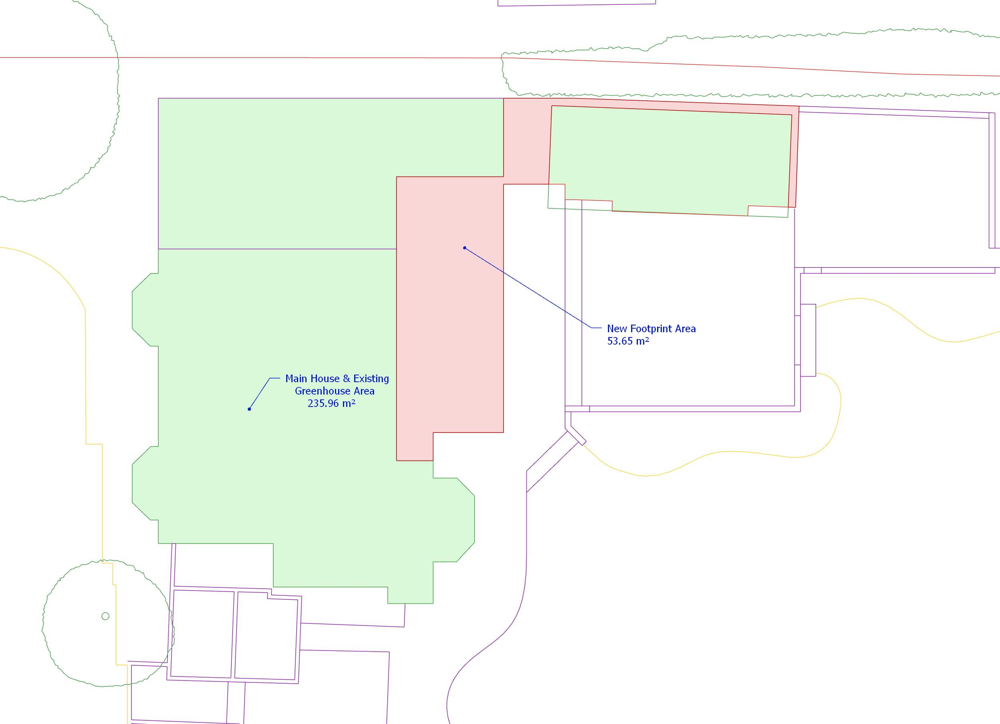
Fig 10.1 - Definitive AutoCAD Area Measurement: the New Footprint of 53.65 m² (Red) Against the 235.96 m² Main House and Existing Greenhouse Area (Green)
10.2 | The Ground Beneath The New Footprint
Figure 10.2 places that measured area upon the site as it exists today by overlaying the 53.65 square metre footprint directly onto the aerial drone photography. What lies beneath it could scarcely be more favourable to the openness of the Green Belt.
The new footprint occupies the existing paved terrace and its associated hard surfaces and threads between built elements that already stand. It is bounded by the rear of the dwelling on one side and by the existing utility wing and the garage and greenhouse range on the others and it opens towards the garden only along its southern edge. The ground taken is accordingly existing impermeable hardstanding already enclosed on three sides by development. Not a single square metre of lawn and not a single planting bed is taken by the new built footprint anywhere on the scheme. The only living thing within the marked area is the small ornamental cherry which as Sections 3.3 and 13.0 record is carefully lifted and replanted rather than felled. The wider landscaping then moves the site in the opposite direction to any loss because generous new fully drained planting beds are established around the new terraces as set out at Section 9.5 so the permeable and vegetated proportion of the site increases as a direct result of the proposal.
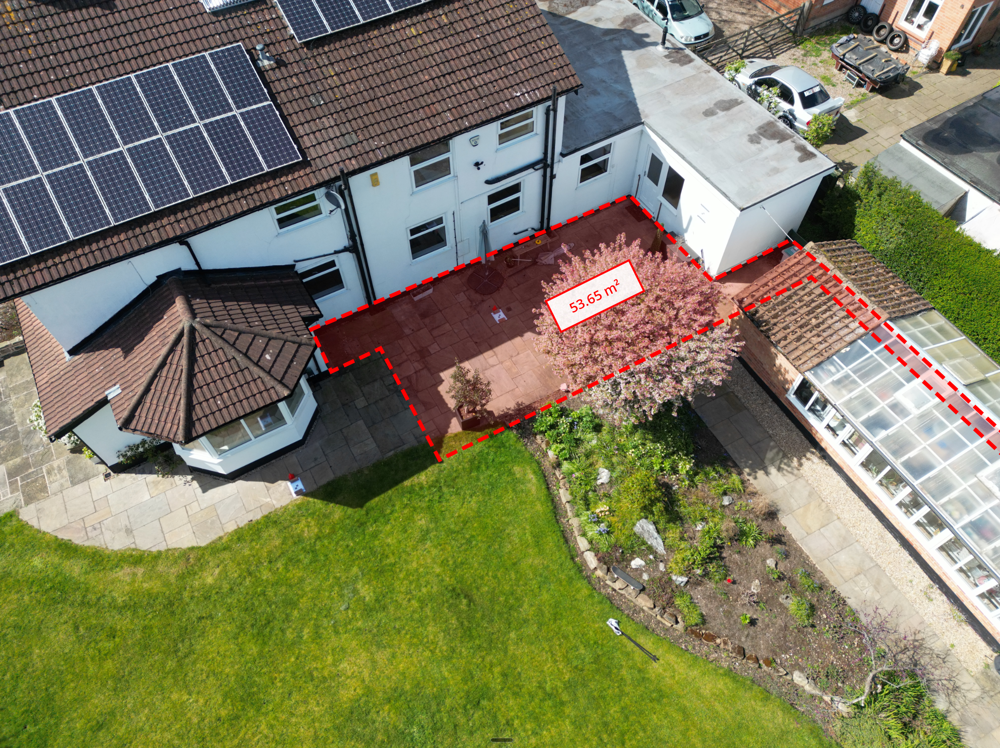
Fig 10.2 - The Footprint Lying Almost Wholly on the Existing Paved Terrace Between Built Elements
10.3 | The Existing Terrace And Its Measured Fall
The character of that hardstanding strengthens the case further because the surface being built over is not merely impermeable but actively defective in drainage terms. The existing terrace carries no dedicated drainage provision of any kind and relies wholly upon water running off its surface. Its incline was measured during the design survey and the finding is instructive. The terrace does not fall towards the lawn at all. It falls back towards the house so the largest hard surface at the rear of the dwelling presently directs its runoff at the very building a drainage strategy should protect.
The proposal removes this defect in its entirety. The replacement terrace arrangement is raised at the dwelling and stepped progressively down and away with co-slot channel drainage at every threshold and every level change discharging to the buried soakaway network beneath the new planting beds as set out in full at Sections 9.3 to 9.5. The scheme therefore takes the worst draining surface on the site and converts it into the best managed one. Building over this ground is not a cost to be tolerated. It is the mechanism by which a standing defect is corrected.
10.4 | Independent Verification And The PlanVision Drawing Platform
The measured footprint has additionally been checked through a second and entirely independent medium. Figure 10.3 shows the same proposed area measured within PlanVision which is Noble Architecture's proprietary online drawing platform through which every drawing in this application can be viewed interrogated and measured via the project's dedicated PlanVision portal. The check was made with the platform's rapid click and drag area tool traced over the proposed ground floor plan on screen and it returned 55.41 square metres. The two media therefore agree to within 1.76 square metres which is a margin of a little over 3 per cent and that modest difference is exactly what an on screen graphical tracing is expected to produce. It bears emphasis that this reading is a secondary sanity check and nothing more. The authoritative figure remains the AutoCAD computation at Figure 10.1.
The platform is offered to the local planning authority as a working resource rather than a curiosity. Should the assessing officer wish to verify any dimension or any area of their own choosing the robust linear rectangle and area measurement tools visible at Figure 10.3 are available on every drawing in the pack and the officer is warmly invited to use them for anything the assessment requires. The proposed ground floor plan can be opened directly through the link below and the wider resource is described further at Section 17.3.
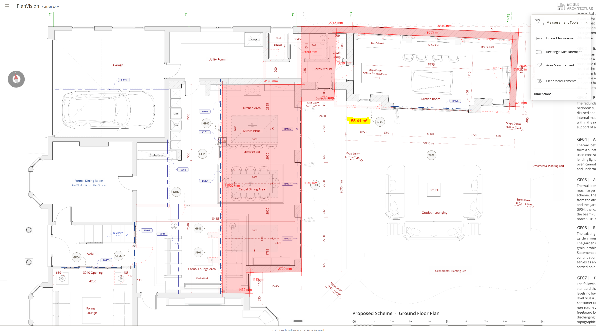
Fig 10.3 - Independent Second Check Within the Practice's PlanVision Platform
10.4 | Footprint Conclusion
Taken together these three demonstrations convert the central claim of this statement from assertion into measurement. The proposal adds 53.65 square metres of new ground floor footprint. That footprint amounts to well under a quarter of the built form already standing. It lies almost wholly upon existing impermeable hardstanding whose measured fall presently works against the dwelling. And it takes no lawn no planting bed and no open garden ground anywhere on the site. The significance of these figures for the Green Belt assessment is drawn out at Section 11.0 and their significance for the surface water strategy runs through Sections 8.0 and 9.0.
11.0 | Green Belt Justification
The application site is washed over by the Derby and Nottingham Green Belt. The design team identified this designation at the very outset and shaped the entire proposal around it rather than treating it as a hurdle to be argued with the case officer down the line.
The National planning policy does not treat householder extensions in the Green Belt as automatically objectionable. Paragraph 154(c) of the National Planning Policy Framework (December 2024) confirms that the extension or alteration of a building is not inappropriate development provided that it does not result in disproportionate additions over and above the size of the original building. The determining question for this proposal is therefore one of proportion and openness rather than one of very special circumstances.
The scheme has been disciplined specifically to answer that question. Each of its three elements works over ground that is already built upon or already occupied by a structure. The existing greenhouse is removed and replaced with a garden room on materially the same footprint. The two storey element is raised over the existing garage rather than pushed out into open garden. A modest linking element knits together built form that is already present. The quantified footprint evidence at Section 10.0 places measured figures behind every one of those claims. The entire new ground floor footprint amounts to 53.65 square metres which equates to some 22.7% of the 235.96 square metres of built form already standing and almost every square metre of it falls upon existing impermeable hardstanding rather than upon open ground. The proposal therefore takes up virtually no new Green Belt land and adds virtually no new open form.
That discipline was tested directly during the design process and it held. The accommodation needs of the applicant's family and in particular the anticipated arrival of the applicant's ageing parents described at Section 4.5 could comfortably have been argued to justify a materially larger first floor extension and early design discussions explored exactly that. We specifically advised against any such enlargement for one reason. The site lies within the Green Belt and its openness was treated as a constraint of the first order. The settled scheme instead consolidates the entire first floor requirement within a new roof formed over the existing cheaply constructed flat roofed garage. Nothing extends beyond the envelope that already stands. The choice also delivers a clear improvement because the poorest structure on the site is replaced with a properly tiled pitched roof that improves the fabric quality and the appearance of the dwelling while tailoring it to the family's very current need. The applicant accepted a smaller addition than the family's needs might have supported and the openness of the Green Belt is the direct beneficiary of that restraint.
The openness of the Green Belt is the essential characteristic to which paragraph 153 of the Framework attaches substantial weight. Here that openness is barely engaged. The additions sit within and above the existing built envelope of the dwelling. The small area of genuinely new footprint threads between existing built elements over the existing paved terrace as Figure 10.2 demonstrates photographically so the spatial dimension of openness is touched only in the most marginal way and the visual dimension is protected by the massing controls at Section 6.0. The land on the opposite side of Lowdham Road is open agricultural countryside and it is left wholly untouched by the proposal. There is no encroachment into the countryside and no erosion of the open gap the Green Belt exists to protect. The proposal accordingly preserves the openness of the Green Belt and does not conflict with any of the five Green Belt purposes set out at paragraph 143.
Crucially this is not an untested reading of policy on this stretch of Lowdham Road. The local planning authority has repeatedly reached this same conclusion for comparable extensions to the applicant's immediate neighbours under the identical Green Belt designation. That established and consistent pattern of decision making is set out in full at Section 12.0. The proposal is a proportionate addition that does not amount to inappropriate development and it accords fully with paragraph 154(c) of the Framework and with the Green Belt purposes at paragraph 143.
12.0 | Established Local Development Precedents & Approved Cases
Extensions are the established pattern of development along this stretch of Lowdham Road rather than the exception to it. Practically every dwelling on the settlement side of the road has been extended and many have been extended more than once. The proposal at The Firs introduces no form of development that is not already present and already permitted within a few doors of the application site.
The most directly relevant decision is also the most recent and the closest. The dwelling immediately adjoining the application site at Marlock House Farm was granted planning permission in April 2025 for a front and side extension under reference 24/02226/HOUSE. That permission was granted on land carrying the same Derby and Nottingham Green Belt designation and the same Flood Zone 3 designation as The Firs. The application was supported by a Green Belt assessment and a Flood Risk Assessment and the permitted scheme itself incorporates a roof lantern. The parallel with the present proposal is close to exact.
The pattern continues along the road. Park House was permitted a two storey side extension built over its garage under reference 20/01473/HOUSE and the approved drawing for that scheme is reproduced at Figure 12.2. Ecclesmere was permitted a single storey side extension together with a first floor rear extension under reference 21/02376/HOUSE. Both dwellings sit on Lowdham Road under the same Green Belt and Flood Zone 2 and 3 designations and both applications were supported by a Green Belt assessment and the council's householder flood form before being approved. These are not distant comparators. They are the applicant's neighbours and they were assessed against the very policies that govern this application.
The garden room and roof lantern form proposed at The Firs is equally well established here. The two dwellings either side of the application site at Ashbrook House and Parkfields both carry orangery style additions with glazed roof lanterns of the kind now proposed. Both of those neighbouring roof lanterns are in fact larger than the lanterns proposed here and the lanterns at The Firs will use the Korniche system whose ultra slim and almost frameless profile makes them markedly less visually prominent than a conventional lantern. A neighbouring property further along the road also has a garden room of its own so the garden room form proposed here is likewise already part of the established local pattern. Ashbrook House was itself granted permission to demolish its garage and construct a two storey extension in its place under reference 97/50839/FUL which is precisely the move now proposed over the garage at The Firs. Figure 12.1 locates the application site against these approved neighbouring schemes.
Consistency in decision making is a material consideration and the conclusion here is straightforward. Every individual element of this proposal has a permitted counterpart within a few doors of the site and each of those counterparts cleared the same Green Belt and flood tests that this application must clear. The proposal is if anything more restrained than several of the schemes already approved on this road because it builds over existing footprints and links existing structures rather than extending into open garden. The quantified evidence at Section 10.0 now expresses that restraint in figures. The permitted schemes around the site added genuinely new footprint and new massing to their plots while the entire new ground floor footprint sought here amounts to 53.65 square metres laid almost wholly over existing hardstanding. The Firs is accordingly asking for less than this road has already been granted many times over. Having granted those schemes the local planning authority can grant this one in full accordance with its own recent and consistent decisions.
12.1 | Reference Table Of Approved Neighbouring Cases
The table below collates the approved neighbouring schemes relied upon in this section with their Newark and Sherwood application references and direct links to the planning register and to the principal approved drawings where available. You can click the links in the URLs column to access the associated documentation.
| Property | Reference | Proposal | Decision | Links (Click Them) |
|---|---|---|---|---|
| Marlock House Farm - Lowdham Road NG14 7ES | 24/02226/HOUSE | Front and side extension, porch and roof lantern | Permitted 23 Apr 2025 | Register · Proposed ground floor plan · Proposed south elevation |
| Park House - Lowdham Road NG14 7ES | 20/01473/HOUSE | Two storey side extension over the garage | Permitted 28 Oct 2020 | Register · Ground floor plan and elevations |
| Ecclesmere - Lowdham Road NG14 7EP | 21/02376/HOUSE | Single storey side and first floor rear extension | Permitted 28 Feb 2022 | Register · Proposed elevations · Proposed plans |
| Ashbrook House - Lowdham Road NG14 7ES | 97/50839/FUL | Demolition of garage and construction of a two storey extension in its place | Permitted 1997 | Property history |
| Parkfields - Lowdham Road NG14 7ES | 07/00305/FUL | Single storey rear extension | Permitted 2007 | Property history |
13.0 | Landscaping Garden & Vegetation
The generous rear lawn which forms the principal amenity space of the property is retained in full and no built form encroaches upon it. The existing planting beds around the terrace take a sweeping organic form and this character is deliberately carried through into the new landscaping scheme. New planting beds are established with attractive but strategically thirsty species which both soften the new terraces and contribute to the surface water strategy described at Section 9.0.
A single ornamental cherry tree of the Prunus family which currently sits in the middle of the existing terrace is to be carefully relocated rather than removed. It will be replanted further back within the garden beside the new veranda and jacuzzi area at the far end of the terrace where it continues to contribute its spring blossom to the garden setting.
The new hard landscaping comprises the two upper paved terrace levels and the sunken social seating area with its central fire pit which is aligned directly on the new garden room so that the principal outdoor social space and the principal indoor entertaining space read together as one composition.
The lowest terrace level serving the veranda and jacuzzi area is finished in permeable timber/composite decking as set out at Section 9.4. The veranda has been kept low open and modest in scale and the applicant's position is that it falls below the scale at which planning permission would be required as noted at Section 4.2. The boundary treatments and the mature planting to the perimeter of the plot are unaffected by the proposal.
14.0 | Site Access
14.1 | Vehicular Access And Parking
The proposal does not alter the existing vehicular access from Lowdham Road in any way and it neither removes nor builds over a single existing parking space. This point deserves to be made plainly because it can be verified directly from the drawings and the aerial imagery. Every element of the proposed development sits within the garden envelope of the dwelling. The rear extension occupies the existing rear terrace. The garden room stands on the base of the removed greenhouse. The new first floor accommodation rises above the garage without displacing the vehicle accommodation beneath it and the existing garage door and garage use are retained exactly as they stand. No part of the scheme touches any driveway forecourt or hardstanding used for the parking or manoeuvring of vehicles.
The existing parking provision is exceptional even by the generous standards of this stretch of Lowdham Road. The plot offers several distinct parking areas which operate independently of one another. The gravel forecourt inside the entrance from Lowdham Road provides open parking at the front boundary. The driveway hardstanding directly before the garage comfortably accommodates two further vehicles side by side. The retained garage itself accommodates two vehicles under cover. The private Paddock Access drive along the southern boundary provides additional informal capacity within the curtilage beside the existing outbuilding. The marked provision identified on the aerial view at Figure 14.1 accommodates six vehicles with ease and the true capacity of the forecourt and drive is considerably greater still. Every one of these areas survives the proposal entirely untouched.
Against this provision the additional demand generated by the scheme is modest to the point of vanishing. The number of bedrooms remains unchanged at four and the dwelling remains a single family household. The only change in occupation is the arrival of the applicant's two ageing parents whose modest additional demand a plot of this scale absorbs many times over without a single vehicle standing anywhere but on the applicant's own land. The new sunken inset porch links the parking area logically to the new secondary entrance which improves the everyday relationship between car and door for the older members of the household without altering the parking arrangement itself. There is accordingly no extinguishment of parking provision no displacement of parking onto Lowdham Road and no impact whatsoever on the operation or safety of the adjacent highway network. The proposal fully satisfies the safe and inclusive access and parking requirements of criterion 1 of Policy DM6 of the Allocations & Development Management DPD (2013).
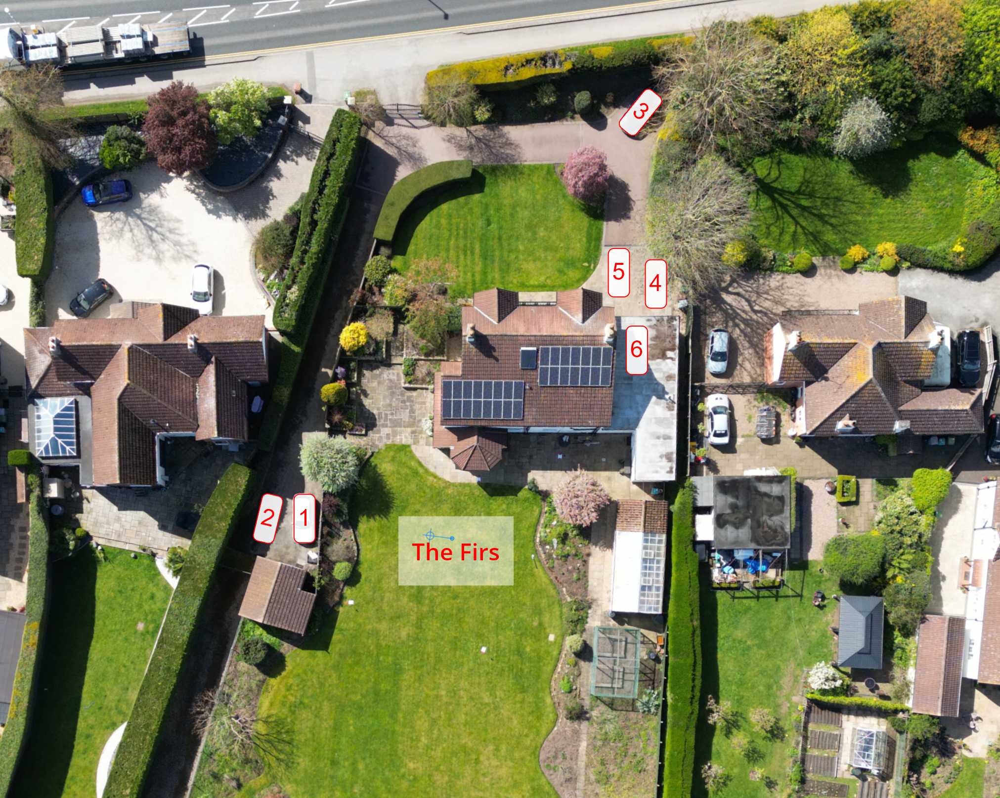
Fig 14.1 - Comfortable Parking For 6 Vehicles
14.2 | Inclusive Access
The scheme has been specifically designed to improve inclusive access for every generation of the enlarged household and above all for the applicant's ageing parents. The full reconfiguration is set out at Section 4.5 and its accessibility logic bears restating here. The parents' bedroom suite sits directly at the head of a single straight staircase flight which has already been reviewed for the future retrofit of a stairlift and associated accessibility aids. The suite is reached entirely on the level from the top of the stairs avoiding the additional internal step that guards two of the other bedrooms. Its bathroom is accessed wholly from within the bedroom and will be fitted out for accessible use with generous manoeuvring space and provision for future aids. The removal of the redundant chimney breast frees the layout for a large accessible bed with clear space to both sides. This approach reflects the Planning Practice Guidance on housing for older and disabled people which records that inclusive design can help older and disabled people live more independently and reduce health and social care costs and which advises that accessible provision is best built in from the outset rather than adapted at a later stage.
Externally the arrangement of stepped terrace levels is a deliberate flood resilience measure as Section 9.3 records and it is paired with multiple door openings at several points around the dwelling so that safe access and escape routes are retained and improved in accordance with paragraph 181(e) of the National Planning Policy Framework (December 2024). Within the dwelling the new open plan living accommodation sits level with the existing principal ground floor and the only internal level change is the single deliberate step down into the garden room at the far end of the composition.
15.0 | Multi Generational Living And Elderly Care Justification
The two storey element of this proposal exists to bring the applicant's ageing parents home. That need has been described at Sections 1.0 and 4.5 in terms of what the scheme physically provides. This section sets out why that provision matters beyond the boundaries of the application site. The pressures upon elderly care in the United Kingdom are now a matter of settled public record and the planning system has developed clear and codified support for households that respond to those pressures by adapting their own homes. The subsections below record the national context the policy and guidance engaged and the weight the applicant respectfully invites the local planning authority to attach to them.
15.1 | The National Context Of Elderly Care
The United Kingdom is an ageing society and the systems that care for its older citizens are under a strain that is no longer seriously disputed. Industry published averages for self funded care now approach £1,300 per week for residential care and exceed £1,500 per week where nursing care is required. This equates to an annual cost comfortably exceeding £65,000 for a single person before any nursing need arises and these costs continue to rise year on year. The scale of the challenge is recognised at the highest level of government. An independent commission into adult social care chaired by Baroness Casey has been established by the Government to chart the future of the care system with its first phase reporting during 2026 and its final recommendations to follow. Families across the country are responding to this landscape in the most natural way available to them. They are bringing their parents home. The adaptation of family dwellings to receive and care for ageing relatives has become a recognised and growing national pattern and it is precisely the pattern this application follows.
15.2 | National Planning Policy And Guidance
This family response is not merely tolerated by national planning policy. It is expressly encouraged. Paragraph 63 of the National Planning Policy Framework (December 2024) identifies older people and people with disabilities among the groups whose housing needs the planning system should address. The Planning Practice Guidance on housing for older and disabled people goes considerably further. It records that the need to provide housing for older people is critical. It states that offering older people a better choice of accommodation to suit their changing needs can help them live independently for longer feel more connected to their communities and help reduce costs to the social care and health systems. It confirms that many older people may not want or need specialist accommodation and may wish to live in general housing that can be adapted to meet a change in their needs which is precisely the form of provision proposed here. It advises that it is better to build accessible housing from the outset rather than have to make adaptations at a later stage. Crucially the guidance directs that these considerations apply from plan making through to decision taking. They are therefore squarely engaged in the determination of this application.
15.3 | The Response Of The Scheme
The proposed scheme answers this national picture in the most modest way imaginable. The scheme creates no new dwelling no annexe and no additional bedroom. It reconfigures the existing first floor so that the bedroom at the head of the staircase becomes an accessible suite with its own adaptable bathroom as set out at Section 4.5. It places the parents on the one route in the house that a stairlift can serve without a single further step as set out at Section 14.2. It builds the accessible provision in from the outset exactly as the guidance prefers rather than waiting for a crisis to force retrospective adaptation. And it achieves all of this within a roof formed over the existing garage so that the response to the family's need costs the openness of the Green Belt nothing as demonstrated at Section 11.0. The alternative to this scheme is not the absence of the need. It is the same elderly couple facing that need without their family around them at a cost the national record shows to be increasingly unsustainable.
15.4 | The Weight To Be Attached
The applicant does not advance these matters as a plea. The scheme is demonstrated elsewhere in this statement to comply fully with the development plan and to cause no harm capable of weighing against it. The accommodation need therefore does not have to tip any balance. It stands as a positive material consideration that pulls in the same direction as the development plan. National policy asks the planning system to help older people live independently for longer within their communities and this application is a direct and willing instrument of that objective. We respectfully invite the local planning authority to attach significant positive weight to it.
16.0 | Current Planning Policy Compliance
The development plan for the district comprises the Newark and Sherwood Amended Core Strategy adopted in March 2019 and the Allocations & Development Management DPD adopted in July 2013. Section 38(6) of the Planning and Compulsory Purchase Act 2004 requires that applications for planning permission be determined in accordance with the development plan unless material considerations indicate otherwise. The proposal has been designed from first principles to accord fully with the development plan and with the National Planning Policy Framework (December 2024). The table below demonstrates this compliance policy by policy.
The picture the table presents is complete and consistent. The proposal accords with every relevant criterion of Policies DM5 and DM6 of the Allocations & Development Management DPD and with Core Policy 9 of the Amended Core Strategy together with the design flood and Green Belt tests of the National Planning Policy Framework and it is supported rather than merely tolerated by the national guidance on housing for older people. Section 38(6) of the Planning and Compulsory Purchase Act 2004 directs that determination follows the development plan unless material considerations indicate otherwise. Here the development plan and the material considerations pull in the same direction. Full accordance is demonstrated and the demonstrable accommodation need of the applicant's family weighs positively beyond it. There is accordingly no proper basis on which permission could reasonably be withheld.
| Policy Reference | Policy Provision | How The Proposal Complies |
|---|---|---|
| Policy DM6 - Allocations & Development Management DPD (2013) | Permits alteration and extension of dwellings subject to six criteria covering access and parking, neighbour amenity, separation and layout, retained amenity space, respect for the host dwelling's design, materials and detailing, and respect for the character of the surrounding area. | Access and parking are unchanged, with the generous existing forecourt retained and ample capacity for the enlarged household (criterion 1, Section 14.1). No new sightlines toward any neighbour are created, no side-facing windows are introduced, and the single new first-floor window is obscure-glazed, protecting neighbour amenity and privacy (criteria 2 and 3, Section 7.0). The exceptional plot retains its amenity space in full, with no encroachment on the lawn or paddock (criterion 4, Sections 2.1 and 13.0). The street-facing works strictly match the host dwelling's materials and Tudoresque character, while the contemporary refresh is confined to the private garden side (criterion 5, Section 5.0). The three subordinate masses, the retained frontage and the untouched openness of the corridor respect the character of the surrounding area and the open countryside (criterion 6, Sections 6.0 and 11.0). |
| Policy DM5 - Allocations & Development Management DPD (2013) | Builds on Core Policy 9 and requires the local distinctiveness of the District's landscape and character of built form to be reflected in the scale, form, mass, layout, design, materials and detailing of new development; requires the layout of development and separation distances from neighbouring development to be sufficient that neither suffers an unacceptable reduction in amenity, including overbearing impact, loss of light and loss of privacy; requires safe and inclusive access and appropriate parking; and requires areas at highest risk of flooding to be avoided and measures to be included to pro-actively manage surface water. | The street-facing works reflect the host dwelling's Tudoresque scale, form, materials and detailing in strict fidelity, while the garden-facing refresh is composed as three subordinate masses of appropriate scale to their context, adding a new ground-floor footprint of only 53.65 m², some 22.7% of the existing built form (Sections 5.0, 6.0 and 10.0). Separation and amenity are protected by design: no new side-facing windows are introduced, the single new first-floor window is obscure-glazed, and the only two-storey element rises over the existing garage, so no neighbour suffers loss of privacy, loss of light or overbearing impact (Section 7.0). Safe, inclusive access and generous retained parking are provided (Section 14.0). As householder development the scheme is exempt from the sequential test (NPPF paragraph 176), and it pro-actively manages surface water through the trial-pit-proven shallow planted soakaway system and the stepped, water-shedding terraces, satisfying the flood-risk and water-management criteria directly (Sections 8.0 and 9.0). |
| Core Policy 9 - Amended Core Strategy (2019) | Requires new development to achieve a high standard of sustainable design and layout, capable of being accessible to all, of an appropriate form and scale to its context and complementing the existing built and landscape environment, including the pro-active management of surface water. | The scheme delivers a high standard of design that is sympathetic to its context, retaining and repairing the Tudoresque street frontage, replacing the poorest structures on the site with well-made contemporary additions, and keeping every element subordinate and appropriate in scale to the host dwelling (Sections 5.0, 6.0 and 10.0). It is designed to remain accessible over the lifetime of the development, providing an accessible first-floor suite for the applicant's ageing parents (Sections 4.5 and 15.0). It pro-actively manages surface water within the site through the shallow planted soakaway system and permeable terracing (Section 9.0), retains and safeguards the dwelling's solar array for future low-carbon expansion (Section 4.6), and increases the permeable, vegetated proportion of the site. |
| NPPF (December 2024) - paragraph 135 | Decisions should ensure developments function well, are visually attractive as a result of good architecture, and are sympathetic to local character and history including the surrounding built environment. | The three-mass composition functions well for an enlarged multigenerational household, delivers a visually attractive contemporary garden elevation alongside a repaired street frontage, and is sympathetic to the host dwelling's Tudoresque character and the green, spacious grain of Lowdham Road (Sections 2.0, 5.0 and 6.0). The accessible first-floor reconfiguration ensures the dwelling continues to function well over the lifetime of the development for occupants of every age and ability (Sections 4.5 and 14.2). |
| NPPF (December 2024) - paragraphs 176 and 181 | Householder development is exempt from the sequential and exception tests (footnote 62); development in flood risk areas is permitted where a site-specific FRA demonstrates flood resistance and resilience, no increase in risk elsewhere, and safe management of residual risk. | Sections 8.0 and 9.0 evidence a flood resistant and resilient design: finished floor levels no lower than existing, raised electrical services, flood-resilient low-permeability materials at low level, stepped external freeboard, and a shallow planted soakaway system sited in ground proven by trial pits GC01 and GC02, with confirmatory BRE Digest 365 testing offered by planning condition. Safe access and egress is retained and improved, and the scheme increases the permeable proportion of the site so that no flood risk is displaced elsewhere. |
| NPPF (December 2024) - paragraph 154(c) | The extension or alteration of a building in the Green Belt is not inappropriate development provided that it does not result in disproportionate additions over and above the size of the original building. | The proposal replaces an existing greenhouse on its footprint, extends over the existing garage, and links existing built form. Its entire new ground floor footprint measures 53.65 m², some 22.7% of the 235.96 m² of built form already standing, and falls almost wholly on existing hardstanding, with the measurement verified across three independent media (Section 10.0). It is a proportionate addition that does not amount to inappropriate development and preserves the openness of the Green Belt, as demonstrated at Section 11.0 and evidenced by the approved neighbouring precedents at Section 12.0. |
| NPPF (December 2024) - paragraphs 161, 167 and 168 | The planning system should support the transition to net zero; significant weight should be given to the need to support energy efficiency and low carbon improvements to existing buildings, expressly including the installation of solar panels, and to the benefits of renewable and low carbon energy generation and its contribution to a net zero future. | The existing roof-mounted solar array is retained undisturbed, and the new wing's rear roof plane is deliberately aligned with the existing roof so that the dwelling's principal generating plane is preserved with built-in capacity for the array's future extension as the enlarged household's energy demand grows. The alternative of scattering panels across the garden room roof was consciously rejected in favour of consolidating renewable provision on the single plane already characterised by it (Section 4.6; drawing notes EE10 and RF01). |
| NPPF (December 2024) - paragraph 63, with PPG 'Housing for older and disabled people' (2019) | National policy identifies older people and people with disabilities among the groups whose housing needs the planning system should address; national guidance records that suitable and adaptable accommodation helps older people live independently for longer and reduces costs to the social care and health systems, applying these considerations through to decision-taking. | The first-floor reconfiguration provides an accessible bedroom suite and adaptable bathroom for the applicant's ageing parents, built in from the outset in the manner the guidance prefers, with stairlift retrofit reviewed and an accessible layout secured by the removal of the redundant chimney breast (Sections 4.5, 14.2 and 15.0). |
| Householder Development SPD (2014) | Sets the council's tests for privacy (7.11–7.12), overbearing impact (7.13–7.14) and overshadowing (7.15–7.16). | Privacy: no new element of direct overlooking is introduced anywhere on the scheme; the roof plane facing the nearest neighbour remains entirely unbroken with no high-level openings, the garden room presents a completely blank windowless flank to that boundary, and the single new first-floor window is obscure-glazed with that treatment offered for control by condition, in accordance with paragraph 7.12 (Section 7.0). Overbearing and overshadowing: the rear additions are single storey and held below the host's eaves, and the only two-storey element rises over the existing garage footprint within a roof stepped down below the main ridge, so no neighbouring habitable room or amenity space is dominated, enclosed or overshadowed, and the site's solar orientation places every meaningful shadow within the applicant's own land (Sections 4.3, 6.0 and 7.3). The exceptional size of the plot means no amenity test turns on a marginal separation distance, and because no new side-facing or habitable-room-facing openings are created the privacy and overbearing tests are satisfied by the design itself; measured separation distances will nonetheless be appended from the topographical survey for completeness. |
17.0 | Supplementary Technical Survey Data And Future Resources
17.1 | High Precision Topographic Lidar Data
Beyond the drawings and reports submitted in support of this application the applicant has taken the additional step of commissioning specialist aerial survey work to build an unusually detailed and independently verifiable understanding of the site's topography. A survey was engaged to undertake a high-precision LiDAR terrain mapping survey of the application site and its immediate surroundings captured from the air and processed into a dense point cloud digital reconstruction of the existing ground conditions.
Figure 17.1 illustrates this raw point cloud capture of the application site and its wider context.
This survey was commissioned as the first piece of work undertaken on this project ahead of any design development whatsoever. Given the site's position alongside the River Trent and the flood risk sensitivities addressed in detail at Sections 8.0 and 9.0 the applicant and design team judged it prudent to establish an exhaustive and independently verifiable record of the existing terrain before committing to a design approach rather than proceeding on assumption. The survey therefore first served to confirm the fundamental feasibility of the scheme and has continued to inform the design process throughout.
The design team has already drawn on the point cloud internally to inform how the proposed terracing across the site steps down through the levels and how surface water is shed across those levels. This research underpins the stepped arrangement and drainage provision now built into the design and the terracing and drainage strategy it informed is addressed in full at Sections 8.0 and 9.0 of this statement.
In the interests of controlling costs and timescales for the applicant the raw point cloud has not yet been processed into formal cross-sectional drawings for submission. Crucially the underlying data exists at survey grade precision and remains available in full should the planning officer require further interrogation of it. Sections can be cut through the terrain at any point the officer considers useful to test level changes flood behaviour or drainage pathways beyond what is already demonstrated within this statement and the accompanying Flood Risk Assessment.
This body of survey work was commissioned well in advance of any request from the local planning authority and reflects the considerable lengths to which the applicant and design team have gone to anticipate and pre-empt every reasonable line of enquiry a case officer might raise regarding this flood risk sensitive site. It stands as a further demonstration of the rigour underpinning this application and as a resource which the local planning authority is welcome to draw upon should any residual question regarding site levels or water shedding arise during determination.
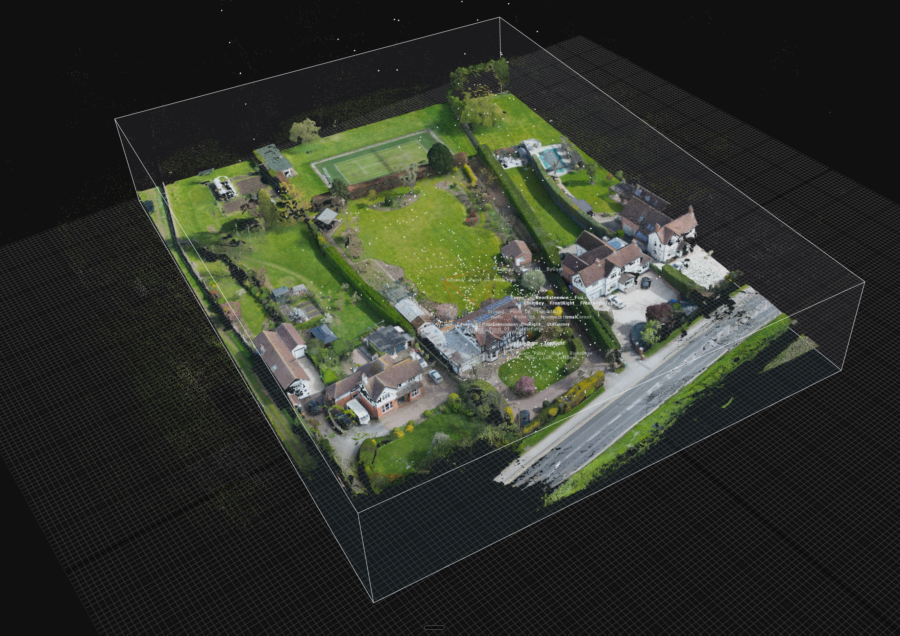
Fig 17.1 - Aerial LiDAR Point Cloud Reconstruction of the Application Site and Its Surroundings
17.2 | High Fidelity Orthographic Site Mapping And The Existing Conditions Site Plan
Alongside the LiDAR terrain survey the applicant commissioned a complete photogrammetric reconstruction of the site captured by drone at survey scale accuracy. That reconstruction was processed into a true orthographic projection and overlaid upon high quality licensed mapping data to produce the high fidelity orthographic site view that sits beneath the CAD linework of the existing conditions site plan at drawing EB03_T02_D02. The CAD linework itself is extracted from the surveyor's measured building survey undertaken to RICS aligned standards. The drawing therefore marries verified measurement with photographic ground truth and every boundary structure and landscape feature shown upon it can be checked directly against the real fabric of the site. The existing conditions drawings additionally carry a system of coded survey markers in which the EB series records the existing beams the GC series records the two ground condition trial pits and the VG series records the ornamental cherry to be relocated so that the assessing officer can locate the physical evidence relied upon throughout this statement directly on the survey record.
The master orthographic image resolves at approximately 32,000 pixels across and approaches 200 megabytes in size. An asset of that scale is far too large to transmit through any conventional submission channel and it has therefore not been attached to this application. All of the drawings and documentation within this submission have instead been derived from it. Crucially the ultra high resolution data is retained in full and remains available to the local planning authority on request.
Should any part of the site warrant closer interrogation during determination the authority is welcome to draw upon this resource and views or extracts can be produced at any scale required.
This mapping resource complements the LiDAR point cloud at Section 17.1. Together the two datasets give the local planning authority an independently verifiable record of the existing site captured before any design work began and they reflect the same philosophy that runs through this entire application. Nothing is asserted that cannot be checked.
18.0 | Availible Interactive Online Tools
18.1 | Exploring The Proposal In Full Three Dimensions Through TrueVision 3D
The whole of this proposal, the existing dwelling and every proposed addition alike, has been published as a complete and fully navigable three dimensional model through TrueVision, Noble Architecture's proprietary 3D platform. As with PlanVision there is nothing to install and nothing to download. A single click opens the entire scheme live within any modern web browser and places the assessing officer directly inside it.
This is not a fixed fly through and it is not a curated reel of flattering viewpoints. The officer is in complete control. The model can be orbited, panned and zoomed without limit and viewed from the street, from the garden, from either neighbour's side of the boundary and from directly overhead. The officer is warmly invited to move freely around and through it and to look at absolutely anything they could wish to examine, from any angle they choose. Nothing is hidden and nothing is staged. Every roof plane, every eaves line, every junction and every elevation is there to be inspected at will and at leisure.
The value of this for the assessment is direct and considerable, because the model allows the officer to satisfy themselves of the central design claims of this statement with their own eyes rather than accept them upon the page. The subordination of the remodelled garage wing can be read at a glance by viewing the front of the dwelling in the round and seeing for oneself that the new ridge sits below the ridge of the host dwelling and that its roof plane steps down and breaks away from the main roofline exactly as described at Sections 4.3 and 5.0. The rear can be orbited to confirm how the single storey additions are held below the eaves of the two storey house, how the glazed link reads as a recessive and transparent joint, and how the garden room sits down a step and turns through its slight two degree angle to present as its quiet structure in the garden. Massing, scale, subordination and the preservation of openness cease to be assertions to be weighed and become qualities the officer can see, circle and confirm for themselves in a few unhurried minutes.
The officer is encouraged to make the fullest use of this resource. It opens in seconds, it is intuitive to navigate, and it may be returned to at any point during the course of determination. The scheme has been designed to be looked at closely and from every side, and this is a standing invitation to do precisely that.
18.2 | Interactive Access To The Full Drawing Pack Through PlanVision
The entire drawing pack for this application is additionally published live through PlanVision, our practice's proprietary online drawing platform introduced at Section 10.4. There is nothing to install and nothing to download. A single click opens the complete set of submitted sheets at full resolution within any modern web browser, exactly as they were drawn.
PlanVision is a great deal more than a viewer. Every sheet carries a robust suite of measurement tools, linear, rectangle and area, together with a live dimensions panel, so that any distance and any area on any drawing can be checked independently and to scale in a matter of seconds. The assessing officer need not take a single figure in this statement on trust. These are the very tools that produced the independent footprint verification reproduced at Figure 10.3, and they are available on every drawing in the pack for the officer to test any dimension the assessment requires. If it can be drawn it can be measured, and if it can be measured it can be checked.
The platform is offered to the local planning authority in exactly that spirit, as a genuine working resource rather than a presentational flourish. The officer is warmly invited to open the pack and interrogate it freely throughout determination, and should any further measured extract or bespoke view assist the assessment the practice will gladly produce it on request. The complete drawing pack can be opened directly through the button below.
18.3 | Interactive Online Tools Conclusion
Taken together the two platforms give the local planning authority an unusually complete and transparent means of assessment. PlanVision allows every dimension of the proposal to be measured and checked and TrueVision allows every surface of it to be seen and explored. Consistent with the philosophy that runs through this entire application, nothing is asserted that cannot be checked and nothing is shown that cannot be examined from every side.
19.0 | Conclusion
This statement closes by recording plainly what the application before the council actually asks for. It asks for modest and carefully differentiated additions to an established family dwelling. It creates no new dwelling and no annexe. It adds not a single bedroom and the property remains a four bedroom single family C3 dwellinghouse. Its entire new ground floor footprint measures 53.65 square metres against the 235.96 square metres of built form already standing which is well under a quarter of it and that footprint falls almost wholly upon the existing paved terrace already enclosed on three sides by development. Not a single square meter of lawn is taken. Not a single planting bed is lost. Not a single tree is felled and the one ornamental cherry affected is lifted and replanted within the same garden. The rear lawn the paddock and the open farmland across Lowdham Road are left entirely untouched. That is the full extent of the ask.
Against that modest ask stands an evidential record of a depth rarely assembled for a householder application. The site was captured by aerial LiDAR and full photogrammetric reconstruction before a single line was drawn. The ground was physically opened and tested at two locations voluntarily and ahead of any request. The new footprint was not estimated but computed within the CAD survey model then overlaid photographically upon the site as it stands today and checked again through a second and entirely independent measurement platform with all three media in agreement at Section 10.0. Every drawing in the pack can be opened measured and interrogated by the assessing officer through the PlanVision / TrueVision 3D platform at any point of the determination. The principle recorded at Section 17.2 can therefore be restated here as the character of the entire submission. Nothing is asserted that cannot be checked.
On the Green Belt the only question national policy asks of a householder extension is the question of proportion at paragraph 154(c) of the Framework and this application answers it with measurement rather than adjective. The additions amount to some 22.7 per cent of the built form already standing. They sit within and above the existing developed envelope with the sole two storey element rising over the existing garage beneath a ridge held approximately 750 millimetres below that of the host. That discipline was tested during the design process and it held. We specifically advised against the larger extension the family's needs might have justified and the applicant accepted the smaller scheme so the openness of the Green Belt has not merely been preserved here. It has been actively defended including against the family's own early aspirations. There is no encroachment into the countryside no erosion of the gap the designation exists to protect and no conflict with any of the five purposes at paragraph 143 and the substantial weight paragraph 153 attaches to openness falls squarely in favour of a proposal that has protected it from the first drawn line.
On flood risk the village's documented record has been confronted rather than managed around. When Gunthorpe flooded during Storm Henk in January 2024 ten of the eleven internal floodings were attributed to rising groundwater rather than to the river and the drainage strategy of this scheme is built directly upon that fact. It places no reliance on deep infiltration the groundwater record would undermine and instead spreads a shallow planted soakaway network through ground the applicant's own trial pits have proven with confirmatory testing to BRE Digest 365 offered by planning condition. It adopts unaltered the resilience package the council has already accepted on this corridor under 20/00889/FUL. It multiplies the safe escape routes available in a flood event and thereby answers in terms the very ground upon which the council refused 25/01539/FUL at Lodge Farm in December 2025. And it corrects a standing defect because the existing terrace drains nowhere and falls back towards the house it should protect while its replacement steps down and away with channel drainage at every threshold. The site will manage surface water better on the day this scheme completes than it does today. Paragraph 181 of the Framework asks for nothing more.
On every remaining consideration the sheet is just as clean. The proposal creates no new view towards any neighbouring property that did not already exist. No side facing windows are introduced anywhere and the sole new first floor rear window is specified in obscured glazing offered for control by condition. The face presented to the nearest neighbour is deliberately the quietest of the entire composition with an unbroken roof plane a blank parapet and a windowless garden room flank standing where a part glazed greenhouse flank stands today so that neighbour's outlook is improved by the exchange. To the south overshadowing is geometrically impossible and to the west lies open farmland with not a single dwelling facing the site. The site stands within no conservation area contains no listed building and carries no protected tree and the scheduled henge some 295 metres away is beyond the reach of any effect. The existing solar array is retained undisturbed with its generating roof plane consciously safeguarded for future expansion so the climate objectives of national policy are answered as well. Parking for six vehicles survives untouched and the highway is unaffected. The harms a case officer must ordinarily weigh do not arise here because each was designed out before this application was ever made.
Beneath the technical case sits the reason the family have asked for anything at all. The applicant's parents are advancing in years and within the next year or two they will come home to The Firs to be cared for by their own family. National guidance describes the need to provide housing for older people as critical. It records that adaptable accommodation of precisely this kind helps older people live independently and safely for longer while relieving pressure on care systems whose self funded costs now comfortably exceed £65,000 a year for a single residential place. And it directs that these considerations carry through to decision taking. The scheme answers that national call in the most modest form imaginable. It places the parents' suite on the one route in the house a stairlift can serve without a single further step and it builds the accessible provision in from the outset exactly as the guidance prefers while asking the Green Belt the flood plain and the neighbours to give up nothing in return. The need does not have to tip any balance because the scheme complies in full without it. It stands as a positive material consideration pulling in the same direction as the development plan and we respectfully invite the council to attach to it the significant weight national policy intends.
Nor is the council asked to do anything its own record has not already done on this stretch of road. The immediately adjoining dwelling at Marlock House Farm was granted its front and side extension with roof lantern in April 2025 under the identical Green Belt and flood designations. Park House was permitted a two storey side extension over its garage. Ecclesmere was permitted a side and first floor rear extension. Ashbrook House was permitted to demolish its garage and build a two storey extension in its place which is precisely the move now proposed and the dwellings either side of the site already enjoy orangery additions beneath roof lanterns larger than those sought here. Every element of this proposal has a permitted counterpart within a few doors of the application site and each of those counterparts cleared the very tests this application must clear. The Firs is asking for less than this road has already been granted many times over and consistency in decision making is itself a material consideration weighing in favour of approval.
Section 38(6) of the Planning and Compulsory Purchase Act 2004 requires that this application be determined in accordance with the development plan unless material considerations indicate otherwise. The preceding sections demonstrate accordance with every relevant criterion of Policy DM6 with the flood and water management expectations of Policy DM5 and with the Framework's tests on design at paragraph 135 on the Green Belt at paragraph 154(c) on flood risk at paragraphs 176 and 181 on sustainable drainage at paragraph 182 on energy at paragraphs 161 167 and 168 and on housing for older people at paragraph 63 together with the privacy overbearing and overshadowing tests of the Householder Development SPD. The development plan and every material consideration accordingly pull in one direction. For permission to be withheld something of substance must weigh against this scheme and seventeen sections of measured photographed and independently verifiable evidence have searched for it. Nothing does. The proposal will not change the settlement pattern of Gunthorpe the openness of its Green Belt or the behaviour of the River Trent. What it will do is allow an established and well kept family home standing on ground already built upon to gather three generations under one roof at the moment they need it most. We respectfully submit that the case for approval is complete and we formally request that planning permission be granted without delay.
Note To Reader : End Of Main Statement
Supplementary Drawing Notes
This section consolidates the notes embedded throughout the formal planning drawing pack. These annotations have been compiled here to provide the planning officer with an accessible and comprehensive reference guide detailing the specific design intentions and technical considerations of the proposal. Providing these notes in a centralised location ensures efficient navigation and clarity regarding the overall design strategy.
Project Design Introductory Notes
Project Overview And Site Context
This overview summarises the more comprehensive Design and Access Statement prepared in support of a householder planning application at The Firs on Lowdham Road in Gunthorpe. The fundamental driver for this proposal is the evolving needs of the applicant's family directly reflecting the growing necessity for multi generational living as the national cost of elderly care continues to rise. The applicant's parents are advancing in years and within the next year or two they will move into The Firs so that the daily support they increasingly require can be provided by their own family within a single household. The first floor is reconfigured around that need. The fourth bedroom which presently serves as a playroom sits directly at the head of the single straight staircase and becomes an accessible bedroom suite reached entirely on the level with the stair already reviewed for the future retrofit of a stairlift. The existing master en suite transfers to the parents' suite and is re provided together with a dressing room within a new subservient cat slide roof formed over the existing garage which is the sole reason any part of the scheme rises above single storey. At ground floor a calm single storey extension knits together the existing built elements of the rear elevation to create the open plan family accommodation this larger household will depend upon and a new garden room replaces the redundant and derelict greenhouse on materially the same footprint. The number of bedrooms remains entirely unchanged at four and there is no intensification of use. To protect the garden and the openness of the Green Belt the applicants consciously discounted both a ground floor extension into the lawn and a larger first floor extension and every element of the settled scheme works over ground that is already built upon. The entire new ground floor footprint measures just 53.65 square metres against 235.96 square metres of existing built form and it falls almost wholly upon the existing paved terrace with no lawn and no planting bed taken anywhere. The property is a substantial early twentieth century Tudoresque dwelling standing within an exceptionally generous plot on the settlement side of Lowdham Road. A tall established hedge subdivides the kept garden from a large grass paddock with a private tennis court and the paddock is left entirely untouched. Open arable farmland faces the site across the road so not a single dwelling stands opposite. The site is not within a conservation area. No Tree Preservation Order applies to the site or anywhere on Lowdham Road and not a single tree is felled. The site is washed over by the Derby and Nottingham Green Belt and lies within Flood Zone 3 and both designations have been treated as first order design constraints from the very outset rather than as hurdles to be argued away after the event. The generous existing off street parking and vehicular access are fully retained and the landscaping strategy increases the planted and permeable proportion of the site.
Architectural Design Strategy & Materials
The scale and massing of the proposed additions have been rigorously controlled to remain subservient to the host dwelling and the scheme is deliberately composed as three clearly differentiated masses rather than one agglomerated addition. The first mass is the two storey side extension formed above the existing garage within a new pitched cat slide roof finished in plain clay tiles to match the main house. The cat slide sweeps low over the retained garage door so that the wing reads principally as quiet roof rather than wall and its ridge is held approximately 750 millimetres below the main ridge with the front roof plane stepped down and broken away from the main roofline so that the original Tudoresque dwelling unmistakably remains the dominant structure in the street scene. An option carrying the mock Tudoresque panelling across the wing was consciously discounted as it would always have read as a poor copy of the genuine frontage and the settled roof form instead replaces the cheap felt covered flat roofed box that presently presents so poorly to the street. The second mass is the single storey rear extension whose parapet concealed warm flat roof is held well below the first floor of the host dwelling. It joins the retained octagonal bay through a fully glazed link that reads as a recessive transparent joint and it is lit by three Korniche roof lanterns chosen for their exceptionally slim almost frameless profiles. The third mass is the garden room which replaces the greenhouse and is deliberately expressed as a separate garden structure. It is set down a step from the main floor level turned through the slight two degree angle that follows the established local grain of rear outbuildings and finished in dark almost black standing seam metal that detaches it visually from the white rendered house. The overarching aesthetic strategy divides the building in two. The street facing Tudoresque frontage with its black and white framing bays and Ionic columned porch is retained and matched in strict fidelity while the lacklustre rear elevation receives a comprehensive contemporary refresh in through coloured monocouche render with black framed casements bi folding doors and a washed light oak lined porch visible only from within the site. This approach is well precedented on this stretch of Lowdham Road where practically every dwelling has been extended and the neighbouring properties already carry approved over garage two storey extensions garden rooms and glazed roof lanterns under the same designations. The landscaping completes the composition. Three terrace levels step down and away from the dwelling with planting beds carrying an embedded soakaway network beneath them and the existing roof mounted solar array is retained on an aligned rear roof plane that deliberately preserves capacity for its future extension.
Protecting Neighbouring Privacy And Amenity
The protection of neighbouring privacy has been a paramount consideration throughout the architectural layout and the governing principle is simple. The proposal creates no new view towards any neighbouring property that does not already exist. No new side facing windows are introduced at any level anywhere on the scheme. First floor side windows were actively considered on more than one occasion and were advised against by both the architect and the planning consultant precisely because they would have introduced a direct line of sight towards the immediately neighbouring dwelling and that advice was accepted by the applicant in full. The elevation facing the nearest neighbour is deliberately the quietest face of the entire proposal. The new first floor accommodation takes all of its daylight from two modest front dormers so the roof plane presented towards the neighbour remains entirely unbroken and the garden room presents a completely blank windowless flank where a fully glazed greenhouse currently stands which is a clear improvement in that neighbour's outlook. The two front dormers are each smaller than the existing bay windows and face only the applicant's own frontage and the open farmland opposite so there is no facing occupier whose amenity could conceivably be affected. The single new first floor window on the rear elevation serves the re provided master en suite faces only the applicant's own garden and is specified in obscured glazing with that treatment offered for control by an appropriately worded planning condition. All remaining new openings sit at ground level within the applicant's own garden behind established boundary planting so no neighbouring room or garden is dominated enclosed or overshadowed. Beyond privacy the scheme actively improves the safety and resilience of the site itself. The village's flood context has been engaged with exceptional rigour. Hand dug trial pits have proven the free draining gravelly soils and a shallow laterally spread soakaway network beneath deliberately thirsty planting beds replaces any reliance on deep infiltration which the published groundwater record shows to be unreliable here. Finished floor levels electrical services and materials follow the resilience package the council has already accepted on this corridor. The terraces step progressively down and away from the dwelling shedding water at every stage with the lowest level finished in permeable decking as a conscious concession in favour of drainage performance and multiple door openings at several points and levels retain and improve safe access and escape. The proposed development therefore provides essential accessible multigenerational accommodation while meticulously respecting the character of the street scene the amenity of every neighbouring occupier and the openness of the Green Belt and it complies fully with Policy DM6 the Householder Development SPD and the National Planning Policy Framework.
General Development Notes
The following notes relate to the proposed scheme as a whole and broadly define the three distinct masses that compose it. Each mass carries a DV code on the proposed site plan and drawing pack, and the full compositional rationale is set out at Section 6.0 of the Design and Access Statement.
DV01 | Additional Storey Above Garage
This note identifies the two-storey side extension, the only element of the proposal that rises above single storey. New accommodation is formed above the footprint of the existing garage within a new pitched cat-slide roof finished in plain clay tiles to match the main house, lit by two modest dormers. The front-facing appearance is deliberately traditional so that the wing matches in with the existing style and character of the host dwelling, and the cat-slide form sweeps the roof low over the retained garage door, softening the front massing so that the wing reads principally as quiet tiled roof rather than as wall. The new ridge is held below the main ridge; on the front elevation the roof plane is stepped down and broken away from the main roofline so that the original dwelling remains the dominant structure, while on the rear the new plane aligns with the existing roof. The wing consequently reads as a smaller and more recessive mass than the flat-roofed garage box it replaces. Internally, the new roof volume contains the re-provided master en suite and a dressing room; this accommodation releases the existing en suite to the adjacent fourth bedroom, which becomes the accessible bedroom suite for the applicant's ageing parents, as set out at Sections 4.5 and 14.2 of the Design and Access Statement and recorded at notes FF01 to FF06. All structural elements are subject to the provisions of note ST02.
DV02 | Single Storey Rear Extension
This note identifies the single-storey rear extension, the connective mass of the scheme. It occupies the ground between the existing built elements of the rear elevation and links to the retained octagonal bay through a fully glazed link that reads as a recessive, transparent joint. The extension carries a parapet-concealed warm flat roof held well below the eaves of the two-storey host, lit by a three-part arrangement of Korniche roof lanterns chosen for their exceptionally slim, almost frameless profile. Walls are finished in through-coloured monocouche render with three sets of black aluminium bi-folding doors opening onto the upper terrace. The form is deliberately different from DV01: where the side extension is pitched, tiled and traditional because it addresses the street, the rear extension is flat, crisp and contemporary because it addresses only the private garden, in accordance with the two-part appearance strategy at Section 5.0 of the Design and Access Statement.
DV03 | Garden Room
This note identifies the garden room, which is deliberately expressed as a separate structure rather than as a further extension of the house. It stands on the base of the removed greenhouse, is set down a step from the main floor level with reduced eaves and door heights, and is turned at the slight two-degree angle that follows the established local grain of rear outbuildings, as explained at Section 4.4 of the Design and Access Statement. Its central roof and walls are finished in dark, almost black standing seam metal, visually detaching it from the white rendered house and rear extension so that it reads as its own quiet building within the garden. It serves as an entertaining space opening directly onto the terrace. The deliberate differentiation of this mass from DV02, and of DV02 from DV01, is the foundation of the massing strategy at Section 6.0 of the Design and Access Statement.
Western Elevation Design Notes
The west elevation is the principal, street-facing (Lowdham Road) frontage of the dwelling and carries the retained Tudoresque character.
EW01 | Subservient Roof Height Of The Two Storey Side Extension
The defining move of this elevation is the clear and deliberate difference in roof heights between the new side extension and the host dwelling. The ridge of the new cat-slide roof is held approximately 750 mm below the ridge line of the main house, as dimensioned on this elevation, and its front roof plane is additionally stepped down and broken away from the main roofline. The two-storey side extension (see also note DV01) therefore always reads as the lesser layer, and the original Tudoresque dwelling unmistakably remains the dominant structure in the street scene. This subservience is not incidental: it is the product of the massing strategy at Section 6.0 of the Design and Access Statement, which caps the wing's height and gives so much of the composition over to roof that the wing reads as a smaller mass than the flat-roofed garage structure it replaces.
EW02 | Replacement Of The Existing Flat Roofed Garage Structure
The existing garage wing presents very poorly to Lowdham Road. It is a cheap-looking, flat-roofed box finished with an exposed felt roof, its upstands and rooftop clutter laid bare to the street, and it reads as a temporary and expedient structure appended to a house of otherwise considerable quality. The proposed elevation replaces this uninspiring element with a properly roofed, permanent-looking building. The new pitched cat-slide roof, finished in plain clay tiles to match the main house, gives the wing the settled appearance of a structure that has always belonged to the dwelling, and it does so unobtrusively: the improvement is achieved through quiet roof form and strict material fidelity rather than through any attention-seeking addition. The existing and proposed conditions are compared directly at Figures 5.1 and 5.2 of the Design and Access Statement.
EW03 | Cat Slide Roof Form & Massing Rationale
The cat-slide roof form was selected after trying multiple other massing forms, recorded at Section 5.1 of the Design and Access Statement. An option carrying the mock-Tudoresque panelling across the front of the wing behind a stepped-back vertical wall was consciously discounted: it drew far too much attention to the addition and, given the awkward proportions of the garage beneath it, would always have read as a poor copy of the genuine frontage. A further option carrying the spire finials of the main gables onto the new element was superseded for the same reason, competing with rather than deferring to the host. The cat-slide form was chosen precisely because it does the opposite. It introduces a quieter, angular mass in which roof predominates over wall, it avoids any imitation panelling that could dilute the authentic character of the retained frontage, and it softens the front massing of the wing so that the eye passes over it to the principal elevation.
EW04 | Dormer Windows To The New Roof
The two new dormers are deliberately modest. Each is smaller than the existing front bay windows of the dwelling, and both sit low within the new roof plane so that they read as incidents in the roof rather than as competing features. The dormer cheeks are finished in a grey lead-effect material, and the dormer windows will be white UPVC to match the existing windows on the front of the property, maintaining the established white window palette of the principal elevation. The dormers face only the applicant's own front garden and Lowdham Road, exactly as the existing front windows do, and accordingly raise no overlooking issue, as set out at Section 7.0 of the Design and Access Statement.
EW05 | No New Side Facing Windows
No new side-facing windows are introduced anywhere on the proposal. The only new openings on the remodelled wing are the two front dormers described at note EW04. The side-facing windows that remain on the dwelling are the existing openings, and their outlook is entirely unchanged. First-floor side windows were actively considered during the design process and were advised against by both the architect and the planning consultant precisely because they would have introduced a new and direct line of sight towards the neighbouring dwelling. That advice was accepted by the applicant in full, and the complete privacy position is set out at Section 7.0 of the Design and Access Statement.
EW06 | Retained Frontage And Strictly Matched Materials
Aside from the remodelled garage wing, the principal Tudoresque frontage is retained unaltered: the black and white applied framing, the two-storey front bays, the Ionic-columned entrance porch and the white render are all untouched by the proposal. The new work matches the retained palette in strict fidelity. The roof is plain clay tiling to match the main house; the wing's front wall is white render to match; the white sectional garage door is retained, or replaced like for like in white; and the wing's mismatched white fascias and soffits are brought into line with the black used across the main house. The full materials schedule for this elevation is tabled at Section 5.2.1 of the Design and Access Statement.
Eastern Elevation Design Notes
The east elevation is the rear, garden-facing elevation of the dwelling.
EE01 | Comprehensive Refresh Of A Poorly Composed Rear Elevation
The existing rear elevation carries none of the architectural quality of the Tudoresque frontage. It is a lacklustre and piecemeal composition of plain white painted render, plain white windows, a simple flat-roofed garage wing and an ageing greenhouse, and there is nothing of merit on it worth preserving. This elevation delivers its comprehensive contemporary refresh. The piecemeal additions are unified into one considered composition: a calm single-storey extension knits the existing built elements together, the window openings are upgraded and rationalised, and the whole garden face of the dwelling gains a coherent palette of soft-toned monocouche render and black-framed glazing. The proposal is a clear act of improvement, replacing the weakest face of the building with its most considered, and it is visible only from within the applicant's own garden. The existing and proposed conditions are compared directly at Figures 5.3 and 5.4 of the Design and Access Statement.
EE02 | Rear Extension Parapet Massing
The rear elevation of the single-storey extension (mass DV02) is deliberately calm and horizontal. Its parapet-concealed warm flat roof is held well below the first-floor windows of the host dwelling, so that the original house rises clear above the new work and the extension reads as a quiet, well-ordered datum drawn across the garden face.
EE03 | Black Aluminium Bi-Folding Door Sets
Three sets of black aluminium bi-folding doors open the new living space onto the upper terrace (note TL01), giving the elevation a regular, well-ordered rhythm and connecting the kitchen, casual dining and casual lounge areas directly to the garden. The openings are carried on beams BM05, BM06 and BM07 in accordance with note ST04, and a co-slot channel drain runs along every threshold in accordance with note DR02, discharging to the buried soakaway network at note DR01.
EE04 | Roof Lantern Profiles
The three Korniche roof lanterns read from the garden only as slim, almost frameless glazed profiles above the parapet line. The system has been selected precisely for its ultra-slim sightlines, so the lanterns introduce no competing roof forms and the parapet remains the governing edge of the composition.
EE05 | Glazed Link
The junction between the retained octagonal bay and the new extension is resolved with a fully glazed link. The link reads as a recessive and transparent joint, so that the new solid form appears to sit clear of the original building rather than colliding with it, and it preserves the legibility of the bay as an original feature. It also provides a discreet secondary opening onto the terrace.
EE06 | Retained Octagonal Bay
The existing octagonal bay window with its tiled turret roof is one of the few elements of genuine charm on the existing rear elevation and it is retained in full. Its frames are renewed in black to match the contemporary rear palette tabled at Section 5.2.2 of the Design and Access Statement, so the original feature is kept and quietly brought into the new composition rather than lost to it.
EE07 | Obscured Glazing To The New First-Floor Bathroom Window
The single new first-floor window on this elevation serves the re-provided master en suite within the new accommodation over the garage wing and is to be fitted with obscured glazing. The window faces the applicant's own rear garden only. The obscured glazing ensures that no overlooking of the neighbouring garden is possible and that there is no degradation of neighbouring privacy, notwithstanding the generous size of the opening. The obscured glazing is offered for control by an appropriately worded planning condition, and the full privacy assessment is set out at Section 7.0 of the Design and Access Statement.
EE08 | Upgraded First Floor Rear Windows To The Main House
The existing rear windows of the main house are upgraded to proper side-hung casement windows with slim glazing bars, finished in black in accordance with the contemporary rear palette tabled at Section 5.2.2 of the Design and Access Statement. The existing first-floor window positions are retained, so the upgrade changes the quality and finish of the openings rather than the fenestration pattern of the elevation. The black frames tie the rear elevation to the black fascias and soffits retained across the dwelling and to the new bi-folding doors and glazed link below.
EE09 | Aligned Roof Plane Over The Garage Wing
On this rear elevation the new roof plane over the remodelled garage wing runs through in line with the existing main roof, reading as one continuous and unbroken plane so that the addition sits as unobtrusively as possible when viewed from the garden. This is in deliberate contrast to the consciously stepped and broken treatment of the front, as explained at Section 4.3 of the Design and Access Statement.
EE10 | Retained Solar Array And Future Renewable Capacity
The existing roof-mounted solar array is retained undisturbed, preserving the dwelling's renewable energy provision. The continuous aligned plane also serves a deliberate forward-looking purpose. The applicant has identified a potential future need to extend the photovoltaic array: with the applicant's ageing parents anticipated to join the household, the energy demand of the dwelling will be materially greater. This roof face is the dwelling's principal and most efficient generating plane, as the existing array already demonstrates, and the run-through created by the new wing provides the natural and least visually intrusive location for additional panels, immediately alongside those already installed. The alternative of a separate array on the garden room roof was consciously rejected, both to keep that structure visually simple and to avoid scattering solar equipment across multiple roofs; any future panels would instead consolidate onto the single plane already characterised by them. This built-in flexibility is a conscious design choice and accords squarely with national policy: paragraph 167 of the NPPF (December 2024) directs that significant weight be given to supporting energy efficiency and low carbon improvements to existing buildings, expressly including the installation of solar panels, while paragraphs 161 and 168 support renewable energy provision and its contribution to a net zero future.
EE11 | Garden Room Flank At The Terrace End
At the far end of the rear composition the flank of the garden room (mass DV03) appears in profile. It is set down a step from the main floor level with reduced eaves and door heights, and its dark standing seam roof and walls detach it visually from the white rendered house and extension so that it reads as a separate garden structure rather than as a continuation of the dwelling, as set out in full at note DV03 and Section 6.3 of the Design and Access Statement. Its mono-pitched edge falls away from the house, continuing the stepped silhouette in which each successive mass sits lower than the last.
Southern Elevation Design Notes
The south elevation faces the private Paddock Access drive along the southern boundary, with the neighbouring properties of Ashbrook and Lynwood beyond, and it presents the scheme's stepped sequence from the two-storey host dwelling down to the garden room.
ES01 | Replacement Of The Redundant Greenhouse With The Garden Room
The transformative move on this elevation is the replacement of the existing greenhouse. The existing structure is a substantial but derelict single-glazed greenhouse that long ago ceased to serve its horticultural purpose and now functions only as an ineffective store, as set out at Section 1.0 of the Design and Access Statement. It is demolished in its entirety and the new garden room (mass DV03) is constructed on materially the same base, so no previously undeveloped ground is taken. The comparison between the existing and proposed south elevations records the exchange directly: a tired, fully glazed utility structure is replaced by a considered, low and purposeful garden building whose composition is described at note ES02. This re-use of an existing developed footprint is central to the Green Belt case at Section 11.0 of the Design and Access Statement.
ES02 | Garden Room South Composition And Materials
The garden room presents a calm tripartite composition to the south. Its central section is finished in dark, almost black, standing seam metal and contains a large glazed screen; the flanking sections are finished in through-coloured monocouche render, each carrying a single slim window. All frames are black in accordance with the contemporary rear palette tabled at Section 5.2.2 of the Design and Access Statement. The parapet-concealed roof steps with the composition, and the whole structure is set down from the main floor level with reduced eaves and door heights, following the falling ground, so that it reads as the lowest and most deferential mass of the scheme. Every opening on this face is single-storey and at ground level behind the established southern boundary treatment, so no privacy issue arises, as set out at Section 7.0 of the Design and Access Statement.
ES03 | Sunken Inset Porch And Secondary Entrance
The new secondary entrance sits within a sunken inset porch recessed between the rear extension and the garden room. The recess gives the doorway genuine shelter and presence within the composition, and the porch takes everyday comings and goings away from the formal principal entrance on the front elevation, linking logically down to the parking area. The individual components of the porch are recorded at notes ES04 to ES07.
ES04 | Vertical Timber Slatted Porch Lining
The porch recess is lined in vertical washed light oak slatted panelling. The timber lining gives the entrance warmth and texture against the surrounding render and standing seam metal, and it marks the doorway clearly within the elevation without recourse to any competing architectural feature.
ES05 | Concealed Soffit Lighting To The Porch
The recessed soffit of the porch carries concealed overhead lighting, so that after dark the entrance reads as a softly glowing timber-lined threshold rather than a dark void. Fitting positions are to be finalised at fit-out and all electrical work must be designed and installed in full compliance with current Building Regulations.
ES06 | Step Up Through The Porch
The step up through the porch into the house forms part of the deliberate freeboard sequence in which each external rise adds protection between external ground level and the internal floor level, as described at Section 9.3 of the Design and Access Statement and recorded at notes DR03 and TL01.
ES07 | Threshold Channel Drain To The Porch
A co-slot channel drain runs across the porch threshold, intercepting surface water before it can pond against the doorway and conveying it to the buried lateral soakaway network beneath the planting beds, in accordance with notes DR01 and DR02.
ES08 | Dark Standing Seam Metal Cladding
The central section of the garden room is finished in dark, almost black, standing seam metal carried across both its walls and its roof. The material has been deliberately selected to detach the garden room visually from the white rendered house and rear extension, so that it reads as its own quiet structure within the garden in the manner of the outbuildings that characterise the local grain (note DV03 and Section 4.4 of the Design and Access Statement). The vertical seams lend the surface a fine, consistent rhythm with entirely concealed fixings, and the system is a high quality, durable and low maintenance finish appropriate to a garden building of this standing.
ES09 | Black Framed Glazed Folding Doors
The garden room opens through a wide set of glazed folding doors framed in black aluminium, carrying the same horizontal glazing bar rhythm used consistently across the rear facing elevations. The doors connect the entertaining space directly to the terraces, and their black frames tie the garden room to the wider rear palette of black-framed windows and doors tabled at Section 5.2.2 of the Design and Access Statement. The opening is carried on beam BM04 in accordance with note ST04.
ES10 | Monocouche Render To The New Walls
The flanking sections of the garden room, and the new walls of the scheme generally, are finished in through-coloured monocouche render in a soft light tone such as Chalk or Silver Pearl. Monocouche is a robust, breathable and low maintenance finish and represents a marked technical improvement over the existing dwelling's painted sand and cement render, which is non-breathable, maintenance-hungry and liable to spalling. The finish is applied in accordance with the contemporary rear palette tabled at Section 5.2.2 of the Design and Access Statement.
ES11 | Retained Host Dwelling And Unchanged Southern Outlook
No alterations are made to the south-facing fabric of the host dwelling itself. The existing gables, the first-floor window, the ground-floor openings including the distinctive circular porthole window, and the flank of the retained bay all remain exactly as existing. Crucially, no new first-floor side-facing windows are introduced anywhere on this elevation. That option was actively considered during the design process and was rejected on the advice of both the architect and the planning consultant, so the outlook towards the neighbouring properties to the south is entirely unchanged, as set out in full at Section 7.0 of the Design and Access Statement.
ES12 | The Stepped Silhouette Read From The South
Read from the south the proposal presents its full stepped silhouette in a single view: the two-storey host dwelling stands tallest; the parapet of the single-storey rear extension and its link sits well below it; the timber-lined porch recesses further; and the garden room, set down with the falling ground, finishes lowest of all. Each successive mass is lower and quieter than the last, so the composition tapers gently into the garden rather than presenting any abrupt or competing bulk. This is the massing hierarchy of Section 6.0 of the Design and Access Statement seen in elevation, and it ensures the scheme reads as subordinate, layered evolution from every southern viewpoint.
Northern Elevation Design Notes
The Northern Elevation forms the side of the property facing the neighbouring dwelling The Elms and is the side elevation alongside which the two storey side extension rises.
EN01 | No New Openings To The Northern Side Elevation
The two-storey side extension (mass DV01) rises over the existing garage footprint alongside this boundary, and the treatment of this elevation has therefore been governed by the protection of the neighbouring dwelling's privacy. No new side-facing windows are introduced at any level on this elevation, or indeed anywhere on the proposal. First-floor side windows were actively considered during the design process and were advised against by both the architect and the planning consultant precisely because they would have introduced a new and direct line of sight towards the neighbouring dwelling; that advice was accepted by the applicant in full. The new work presents to this side as quiet rendered wall and tiled roof plane only, and the existing side-facing windows of the dwelling are retained unchanged. The complete privacy assessment is set out at Section 7.0 of the Design and Access Statement.
EN02 | Blank Garden Room Flank Facing The Nearest Neighbour
The garden room (mass DV03) presents its entire north flank to this boundary as a completely blank, windowless wall beneath a low, dark standing seam roof. Not a single opening faces the neighbouring dwelling from this structure. The contrast with the existing condition is instructive: the structure it replaces is a fully glazed greenhouse whose north side currently presents partly glass, mostly brickwork towards the neighbour. In its place the proposal offers a quiet, enclosed garden building on materially the same base footprint, set down with the falling ground, that can never generate any overlooking whatsoever. The exchange is a clear improvement in the neighbouring dwelling's outlook as well as in the appearance of the site, and the replacement of the greenhouse is set out in full at note ES01 and Section 11.0 of the Design and Access Statement.
EN03 | Subservient New Roof Plane Over The Garage Wing
From the north the new roof over the remodelled garage wing (mass DV01) reads as a single clean tiled plane rising from low eaves, with its ridge held below the main ridge of the host dwelling. The junction with the host is resolved below the main gable, which continues to dominate the composition from this side exactly as it does from the street.
EN04 | Existing Flat Roof And Upstands Swept Away
The existing felt flat roof, together with its exposed upstands and rooftop clutter, is swept away entirely, and the dashed line on the proposed elevation records how little of the former arrangement survives. What the neighbouring dwelling presently overlooks as a cluttered flat roofscape becomes a single tidy plane of plain clay tiles to match the main house.
EN05 | Unbroken Roof Plane With No High Level Openings
The new first-floor accommodation takes all of its daylight from the two west-facing front dormers (note EW04), so the roof plane presented towards the neighbouring dwelling remains entirely unbroken, with no rooflights or openings of any kind introduced at high level on this elevation.
EN06 | Rear Extension Parapet Line
The single-storey rear extension (mass DV02) appears on this elevation only as a low, calm parapet line held well below the first floor of the host dwelling. The extension introduces no massing, no openings and no activity towards this boundary; it simply extends the quiet horizontal datum established by the existing single-storey elements of the dwelling, as described at notes DV02 and EE02.
EN07 | Roof Lantern Profile
Above the parapet line a roof lantern reads as no more than a slim, almost frameless glazed profile. The Korniche system's ultra-slim sightlines ensure that no competing roof form is introduced towards the boundary, and the lantern serves only to draw daylight downward into the plan; it is entirely incapable of generating any overlooking.
EN08 | Standing Seam Roof To The Garden Room
The long north-facing roof of the garden room is finished in dark standing seam metal to match its walls, laid as a single low plane whose fine, consistent seam rhythm and concealed fixings give the neighbouring outlook a calm and orderly surface in place of the existing greenhouse glazing. The roof is kept deliberately low, rising only marginally above its eaves and set down further still with the falling ground, so that from the neighbouring side the entire structure reads as little more than a quiet garden wall beneath a slender metal roof. The material and its rationale are recorded at notes DV03 and ES08, and the finish is a high quality, durable and low maintenance system appropriate to a garden building in this position.
EN09 | The Quietest Face Of The Scheme
Taken together this elevation is deliberately the quietest face of the proposal. The neighbouring dwelling sees retained and unchanged openings on the host, matched plain clay tiles on the new roof, soft-toned monocouche render on the new walls, and the dark recessive flank of the garden room, all in accordance with the materials strategy tabled at Section 5.2 of the Design and Access Statement. Every design decision on this side, from the windowless garden room to the unbroken roof plane and the rejected first-floor side windows, was taken with the amenity of the adjoining occupier in mind, and the elevation demonstrates that the scheme grows substantially in accommodation while presenting almost nothing new to its closest neighbour.
Existing Conditions Survey Notes
The following notes apply to the existing conditions drawings, including the existing ground floor plan, the existing first floor plan and the existing elevations, and record the basis, scope and limitations of the survey information upon which they rely.
EX01 | Existing Greenhouse Recorded Prior To Removal
The greenhouse shown to the east of the dwelling is recorded as existing and is earmarked for removal under the proposals. It is a derelict single-glazed structure long out of horticultural use, as set out at Section 1.0 of the Design and Access Statement, and its footprint is re-used by the proposed garden room (notes GF06 and ES01). Its inclusion on this plan records the existing developed footprint relied upon in the Green Belt case at Section 11.0 of the Design and Access Statement.
EX02 | Existing First Floor Arrangement
The first floor is recorded as existing with four bedrooms, a family bathroom and a single en suite serving Bedroom 1. Bedroom 4 presently serves as a games room and playroom and contains the redundant chimney breast whose external stack was removed above the roof line many years ago. An internal step guards the approach to two of the bedrooms beyond the landing, while Bedroom 4 alone is reached entirely on the level from the head of the single straight staircase flight. These recorded characteristics underpin the accessible first floor reconfiguration described at Section 4.5 of the Design and Access Statement and at notes FF01 to FF06.
EX03 | Concealed Structure Not Surveyed Or Opened Up
The survey is non-intrusive and no opening up of the existing fabric has been undertaken. Wall constructions, lintel provisions, floor build-ups, roof structures and foundations are therefore not recorded and must not be assumed. The existing beams indicated at markers EB01, EB02 and EB03 are recorded from visible downstands and finishes only; their sizes, conditions, bearings and load paths are unknown. A destructive structural survey and a full structural design by a qualified structural engineer are required before any structural works, in accordance with notes ST02 and ST03.
EX04 | Basis And Purpose Of The Measured Survey
The existing conditions plans are derived from a measured building survey undertaken to RICS-aligned standards and commissioned expressly and exclusively as a means of supporting a statutory householder planning application. The level of measured accuracy and detail is proportionate to that purpose and to no other. The survey data is supplemented by the high precision LiDAR terrain capture and the photogrammetric orthographic mapping described at Sections 17.1 and 17.2 of the Design and Access Statement, which together provide an independently verifiable record of the site as existing. These drawings must be read in conjunction with the standing General Notes at the end of this schedule.
EX05 | Not For Construction, Fabrication Or Procurement
These existing conditions drawings are strictly not fit for construction purposes, fabrication, procurement, joinery or steelwork ordering, kitchen or sanitaryware setting out, or Building Regulations approval. No dimension shall be scaled from these drawings. Any party requiring dimensions for fabrication or ordering of any kind, including without limitation the principal contractor, subcontractors, steel fabricators, joinery manufacturers and window and door suppliers, must take and rely upon their own site measurements.
EX06 | Contractor Verification Of All Dimensions
The appointed principal contractor is solely responsible for verifying all dimensions, levels, openings and existing boundary conditions on site prior to the commencement of any fabrication, ordering of materials or construction works. Any discrepancy found between these drawings and the physical site must be reported immediately to Noble Architecture and the client before proceeding. The contractor must not scale from these drawings for any purpose.
EX07 | Services And Drainage Not Traced
Existing mechanical, electrical and plumbing services, together with below-ground drainage runs, have not been traced and are not recorded on these drawings. Where any sanitaryware, appliance or service position is shown it is indicative of surface-visible fittings only. The contractor must locate, trace and verify all services and drainage on site prior to any works, must undertake a CCTV drainage survey where below-ground connections are to be made or altered, and must protect all live services throughout the construction period.
EX08 | Boundaries, Gardens And Site Features Indicative
Beyond the footprint of the measured buildings, garden features, planting, tree canopies, hard landscaping edges and boundary lines are shown indicatively, derived from the photogrammetric orthographic mapping and licensed mapping data described at Section 17.2 of the Design and Access Statement. The drawings do not constitute a legal boundary survey, no title investigation has been undertaken by Noble Architecture, and legal boundaries must be confirmed against the registered title wherever they are material to any works.
EX09 | Levels And Datums
Levels shown on the existing conditions drawings are relative to the ground floor finished level (GFFL) datum. Site levels in metres AOD are to be appended on completion of the topographical survey, and the flood-related level commitments of the scheme are recorded at Sections 9.2 and 9.3 of the Design and Access Statement.
EX10 | Survey Markers On The Existing Plans
The coded markers appearing on the existing conditions plans are cross-referenced as follows: EB01 to EB03 record existing beams (note ST03); GC01 and GC02 record the hand-dug ground condition trial pits (Site Plan Landscaping Notes); and VG01 records the ornamental cherry tree to be carefully relocated, not felled (note VG01). Each marker is provided so that the assessing officer can locate the physical evidence relied upon in the Design and Access Statement directly on the survey record.
Ground Floor Plan Specific Notes
GF01 | Kitchen Boxed Out Section
The removal of the existing kitchen walls creates an unusually long clear span across the open plan space, and a central structural element is therefore required, primarily to house a structural steel column (CL01) to be specified by the structural engineer (notes ST03, ST04 and ST05). Rather than leave this as a bare structural intrusion, the design turns it to practical advantage. The column position is boxed out to form a concealed service void housing the soil vent pipe and waste water pipes serving the first-floor Bedroom 4 en suite (note FF02); the pipes are re-routed and rejigged slightly to suit, so that the boxed section works threefold, as structure, as a discreet pipe riser, and as the anchor for a decorative room divider added to one side which helps zone the kitchen within the larger open plan space. The internal arrangement is best appreciated through the interactive TrueVision3D model available via the Project Portal linked on this sheet.
GF02 | Existing Kitchen Wall Removals
This marker records the removal of the existing kitchen walls shown dashed on the plans, which presently confine the kitchen to a compartmented layout and separate it from the rear of the house. Their removal opens the back of the house into the new single-storey extension, creating the continuous open plan kitchen, dining and living space at the heart of the scheme. The new openings are carried on the proposed beams recorded at note ST04, principally BM01, the large-span beam whose downstand also contains the boxed service riser at note GF01, and BM02, the shorter-span beam. The existing beams EB01 and EB02 within this fabric are addressed at note ST03, and the entire arrangement is subject to full structural design and destructive survey in accordance with note ST02. No works arise within the formal dining room or the family television room, both of which are expressly annotated as unaffected on the proposed plan.
GF03 | Removal Of The Redundant Chimney Breast
The redundant chimney breast, which is also present at first floor level within the room becoming the accessible bedroom suite, is to be removed at ground floor level as part of the wider ground-floor works. The chimney is long disused and its external stack was removed above the roof line many years ago; the works simply take out the residual internal masonry, releasing usable floor area and wall line at both levels. The first-floor counterpart of this removal, within the new accessible bedroom suite, is recorded at note FF05. The removal sequence, temporary works and the support of any masonry retained above are subject to the structural provisions of notes ST01 and ST02.
GF04 | Atrium / Formal Lounge Wall Opening Up
The wall between the atrium and the formal lounge currently features only a single doorway. It is to be opened up to form a substantially larger opening fitted with internal glazed sliding doors carrying the same horizontal glazing bar style used consistently across the scheme, so that the formal lounge remains fully separable while borrowing light from, and lending light to, the central atrium. Because the extent of what bears onto this internal wall, including any floor joists over, cannot be established without opening up, a structural engineer must specify the new beam (BM series, note ST04) and undertake a destructive structural survey prior to construction, in accordance with notes ST01 and ST02.
GF05 | Atrium / Kitchen Wall Opening Up
The wall between the atrium and the kitchen currently features only a single doorway. It is to be opened up to form a much larger opening fitted with internal glazed sliding doors in the same horizontal glazing bar style common to the scheme. The intention is experiential as much as practical: the change creates a far more open and light-filled transition from the atrium through to the kitchen, and the glazed doors deliberately guide the eye onward into the open plan space and the garden beyond, uniting the retained core of the house with its new garden-facing accommodation. As with note GF04, the loads bearing onto this wall cannot be established without opening up, so a structural engineer must specify the beam (BM series, note ST04) and undertake a destructive structural survey prior to construction, in accordance with notes ST01 and ST02.
GF06 | Removal Of Greenhouse & New Garden Room
The existing greenhouse, annotated for removal on the existing conditions plan, is demolished in its entirety and the new garden room (mass DV03) is constructed on materially the same base, so no previously undeveloped ground is taken. The garden room is deliberately set at the slight two degree angle to the host dwelling, following the established local grain in which rear outbuildings sit slightly askew of their hosts, as explained at Section 4.4 of the Design and Access Statement; the angle also allows the structure to read as its own building within the garden rather than as a rigid continuation of the house. The room is set down a step from the main finished floor level, as annotated on the plan, and serves as an entertaining space with bar, television wall and pool table, opening onto the terraces through folding doors carried on beam BM04 (note ST04). Its external expression is recorded at notes DV03, ES01, ES02 and EE11.
GF07 | Flood Resilience Measures
The following package of flood resistance and resilience measures is embedded within the proposal and reflects the standard the local planning authority has previously accepted on this corridor (application 20/00889/FUL): finished floor levels no lower than those of the existing dwelling, accommodating a minimum of 300 mm above the 1-in-100-year flood level plus a 30% climate change allowance, or no lower than existing, whichever is the higher; electrical services and the consumer unit within the new accommodation set at high level; low-permeability, flood-resilient materials at low level; non-return valves to any new below-ground drainage connections; a stepped external terrace arrangement adding freeboard between external ground and internal floor level (note DR03); and co-slot channel drainage at every threshold discharging to the buried soakaway network (notes DR01 and DR02). Final levels are to be confirmed against the topographical survey and the site-specific Flood Risk Assessment, and all measures must be designed and installed in full compliance with current Building Regulations.
ST01 | Structural Provisions - Chimney Breast Removal And New Internal Opening
Noble Architecture flags the removal of the redundant chimney breast at ground and first floor level, and the formation of the new door opening between the fourth bedroom and the transferred en suite, as items requiring structural design input. Where any masonry associated with the former chimney is retained above the levels of removal it must be adequately and permanently supported by an engineered solution, and the new door opening must be provided with an appropriately specified lintel. These elements are highlighted purely as provisional points of discussion and are merely flags. The definitive structural strategy, including all final load-bearing calculations and specifications, falls outside the scope of this appointment and must be independently confirmed and detailed by a qualified structural engineer during the subsequent Building Regulations stage.
ST02 | Technical Specifications And Structural Design
The proposed scheme involves significant structural alterations including the new pitched roof structure over the existing garage wing, the large glazed structural openings serving the single-storey rear extension, the removal of a redundant chimney breast at ground and first floor level, and new and infilled internal openings at first floor. All load-bearing elements including steel beams, lintels, roof structures and foundations must be independently designed, specified and certified by a fully qualified structural engineer. Furthermore, the contractor is responsible for all mechanical, electrical and plumbing designs, including the drainage connections serving the transferred and re-provided en suite bathrooms. Noble Architecture accepts no responsibility for the structural integrity or technical performance of the proposed design.
ST03 | Existing Beams & Structural Elements
Markers EB01, EB02 and EB03 record existing beams within the ground floor structure, and a structural engineer must be engaged in respect of all three.
EB03, within the garage, will be required to accept additional loads from the new floor formed above it. The existing flat roof construction is likely to have been designed with snow loading in reserve, so spare capacity may well exist, but this is not assumed and must be confirmed by the engineer. EB01 and EB02 should be removed if practicable. The design already carries a substantial downstand at proposed beam BM01, which additionally contains the boxed service riser at note GF01, and retaining multiple further beam downstands across the ceiling of the open plan space would produce a cluttered and visually unresolved soffit. Both beams, however, bear onto a wall that is itself being removed internally, and that wall must therefore be presumed fully structural. Noble Architecture makes no structural recommendation in this note and simply communicates the design intent: without a destructive structural survey the existing load paths cannot be gauged, and a full structural design by a qualified engineer is required in accordance with note ST02.
ST04 | Proposed Beams (BM Series)
The BM series markers on the proposed plan record the new beams anticipated by the design, all subject to full design, specification and certification by the structural engineer in accordance with note ST02.
BM01 is the principal large-span beam and BM02 the shorter-span beam; together they open up the back of the house into the new extension (note GF02). BM03 is the atrium wall beam serving the new internal openings at notes GF04 and GF05. BM04 spans the garden room folding doors, and BM05, BM06 and BM07 span the three bi-folding door openings serving the kitchen area, the casual dining area and the casual lounge area respectively on the rear elevation of the extension. All positions are indicative only: final sizes, bearings, padstones and connection details rest entirely with the appointed engineer.
ST05 | Ring Beams, Roof Lantern Trimmers, Wind Posts And Ancillary Structure
Noble Architecture recognises that the structural scheme may additionally require ring beams, roof lantern trimmer arrangements, wind posts, additional columns and other ancillary structural elements, particularly given the spans of the open plan area and the extent of glazed openings.
These elements are deliberately neither designed nor shown on the planning drawings. There are many legitimate ways in which the structure could be engineered, and the definitive strategy rests with the suitably qualified structural engineer to be engaged by the contractor at the Building Regulations stage. This note is included to record that the need for such elements is understood and anticipated, not to prescribe any particular solution, and the limitations set out at note ST02 and in the standing general notes apply in full.
First Floor Plan Specific Notes
The following notes record the reconfiguration of the first floor around the new accessible accommodation for the applicant's ageing parents, as set out in full at Sections 4.5 and 14.2 of the Design and Access Statement.
FF01 | Accessible Bedroom Suite (Bedroom 4)
The existing fourth bedroom, which presently serves as a children's playroom, is converted into an accessible bedroom suite for the applicant's ageing parents, who are anticipated to join the household within the next year or two. The room was selected because it sits directly ahead at the head of the staircase: the stair rises in a single straight flight, has already been reviewed for the future retrofit of a stairlift and associated accessibility aids, and delivers this room - uniquely among the bedrooms - entirely on the level, avoiding the additional step that guards two of the other bedrooms beyond the landing. No new external openings are required to form the suite and the existing fenestration of the room is retained.
FF02 | Transferred Accessible En Suite Bathroom
The existing en suite serving the master bedroom (Bedroom 1) is transferred in its entirety to the new accessible suite, providing the parents with a bathroom reached wholly from within their own bedroom. The room will be fitted out for accessible use, with generous manoeuvring space and provision for the future installation of mobility aids, so that it can adapt as the occupants' needs change. This approach follows the national Planning Practice Guidance on housing for older and disabled people, which advises that accessible provision is best built in from the outset rather than adapted at a later stage. All sanitaryware, drainage and ventilation alterations must be designed and installed in full compliance with current Building Regulations.
FF03 | Blocked-Up Door Between Bedroom 1 And The Transferred En Suite
The existing door opening between the master bedroom (Bedroom 1) and its former en suite is blocked up, with the infill finished flush and made good to match the adjoining wall surfaces on both sides. This closure separates the two suites completely, securing the privacy of the parents' accessible bathroom and of the master bedroom alike.
FF04 | New Door Opening From Bedroom 4 Into The Accessible En Suite
A new door opening is formed from the accessible bedroom directly into the transferred en suite, so that the bathroom is reached wholly from within the parents' own room without recourse to the landing. The opening is to be provided with an appropriately specified lintel in accordance with note ST01, and its clear width and threshold detail should be selected at fit-out with accessible use in mind.
FF05 | Removal Of The Redundant Chimney Breast (First Floor)
The redundant chimney breast projecting into the accessible bedroom is removed at first floor level, together with its counterpart at ground floor level (note GF03). The chimney is long disused and its external stack was removed above the roof line many years ago, so no change to the roofscape or external appearance arises. The removal releases the full wall line of the room and permits a far more flexible layout in which a large accessible bed can be positioned with clear circulation space to both sides. The removal sequence and the support of any retained masonry are subject to the structural provisions of notes ST01 and ST02.
FF06 | Re-Provided Master En Suite And Dressing Room Above The Garage
The master en suite displaced by the transfer at note FF02 is re-provided within the new accommodation formed above the existing garage (mass DV01), together with a functional dressing room on the front side beneath the new cat slide roof, so that Bedroom 1 becomes a complete master suite. Because the new roof volume exists in any event, it is used to its full sensible extent rather than leaving half of the space redundant, which is the origin of the generous en suite proportions. The dressing room is lit by the two front dormers (note EW04) and the en suite by the single obscure-glazed rear window (note EE07). No side-facing openings are introduced at any point, in accordance with notes NE01 and EW05 and Section 7.0 of the Design and Access Statement.
Roof Plan Specific Notes
The following notes relate to the proposed roof plan and record each roof type within the scheme, its material and its design intent. All roof constructions, falls, junctions and weatherings must be designed and installed in full compliance with current Building Regulations, and the structural provisions of notes ST02 and ST05 apply throughout.
RF01 | Retained Main House Roof And Solar Array
The pitched roof of the host dwelling is retained unchanged, with its dark red plain clay tiles to the front planes, its later interlocking tiles to the rear plane, and its chimneys all kept exactly as existing. The existing roof-mounted solar array is retained undisturbed on the rear plane, and the aligned run-through created by the new wing roof deliberately preserves the least visually intrusive location for its future extension, as recorded at note EE10. The only interaction between the new work and this roof is the resolved junction with the new cat-slide roof recorded at note RF02.
RF02 | New Cat Slide Roof Over The Garage Wing
The new pitched cat-slide roof over the remodelled garage wing (mass DV01) is finished in plain clay tiles to match the main house. Its ridge is held below the main ridge; on the front the roof plane is stepped down and broken away from the main roofline so that the host dwelling remains dominant in the street scene (note EW01), while on the rear the plane runs through in line with the existing roof so that the addition reads as one continuous, unobtrusive surface (note EE09). The junction details, valleys and any box gutter arrangement against the existing roof must be designed and weathered by the contractor in full compliance with current Building Regulations.
RF03 | Dormer Window Roofs
The two modest dormers sit low within the new cat-slide plane so that they read as incidents in the roof rather than as competing features. Each carries its own small pitched roof finished to match the main roof, with cheeks in a grey lead-effect material and white UPVC windows matching the front window palette, as recorded at note EW04. Both dormers face the front only, and no rooflights or openings of any kind are introduced on the north-facing roof plane towards the neighbouring dwelling (note EN05).
RF04 | Warm Flat Roof To The Rear Extension
The single-storey rear extension (mass DV02) carries a parapet-concealed warm flat roof held well below the first-floor windows of the host dwelling. The membrane specification is unknown at this stage and is likely to be an EPDM or GRP system at the discretion of the building contractor, laid to adequate falls with internal or concealed outlets so that the parapet line remains clean on every elevation. The roof is deliberately free of plant, flues and clutter, in direct contrast to the exposed felt roof it replaces, and its three glazed openings are trimmed in accordance with note ST05.
RF05 | Korniche Roof Lanterns
The three roof lanterns to the rear extension are the Korniche system, selected deliberately for its exceptionally slim, almost frameless sightlines. They sit low above the parapet line so that from the garden they read only as slim glazed profiles, introducing no competing roof forms (notes EE04 and EN07), while flooding the open plan space below with daylight. Trimmer arrangements and fixings are subject to note ST05 and the manufacturer's requirements.
RF06 | Glazed Link Roof
The junction between the retained octagonal bay and the new extension is roofed with the fully glazed link recorded at note EE05. The glazed roof reads as a recessive, transparent joint between old and new, preserves the legibility of the bay and its retained tiled turret roof as original features, and must be specified with self-cleaning glass units and concealed framing consistent with the quality of the adjoining Korniche lanterns.
RF07 | Standing Seam Roof To The Garden Room
The garden room (mass DV03) carries a low dark standing seam metal roof continuous with its wall cladding, laid as a single quiet plane whose fine seam rhythm and concealed fixings give the structure its distinct identity as a separate garden building (notes ES08 and EN08). The roof is kept deliberately low, rising only marginally above its eaves and set down further with the falling ground, so that it presents the quietest possible surface to the neighbouring dwelling and to the garden alike.
RF08 | Rainwater Disposal From All Roofs
Rainwater goods across the scheme are finished in black to match the fascia and window palette. All new roofs discharge via concealed or discreet outlets and downpipes into the surface water strategy of the site: runoff is conveyed to the co-slot threshold drainage and onward into the buried lateral soakaway network beneath the planting beds, in accordance with notes DR01 and DR02 and the drainage strategy at Section 9.5 of the Design and Access Statement. No new connection to any public sewer is proposed for surface water, and final falls, outlet positions and pipe sizing must be designed in full compliance with current Building Regulations.
Site Plan Landscaping Notes
The following notes relate to the proposed site landscaping and drainage arrangement and are cross referenced from the coded markers on the site and landscaping plans rather than from any single elevation.
GC01 | Ground Conditions Trial Pit 01
This marker records the location of hand-dug trial pit GC01, the first of two ground condition investigation points opened within the curtilage to inform the surface water drainage strategy. The pit was excavated manually by spade to a practical depth of approximately 650 mm and revealed a generally gravelly, sandy loam of visibly free-draining character throughout its full depth. Critically, no mudstone, shale, or other impenetrable stratum was encountered at any point within the excavation. These findings along with photographic evidence are reported in full at Sections 8.0 and 9.0 of the Design and Access Statement.
GC02 | Ground Conditions Trial Pit 02
This marker records the location of hand-dug trial pit GC02, the second of the two ground condition investigation points. Its position was chosen deliberately: it sits within the area of the proposed planting beds beneath which the buried lateral soakaway network is to be formed, meaning the ground has been tested in precisely the location where the drainage strategy will rely upon it. The pit was excavated manually by spade to a practical depth of approximately 450 mm and revealed the same generally gravelly, free-draining sandy loam recorded at GC01, again with no mudstone, shale, or other impenetrable stratum encountered. The consistency of the findings across two separate locations provides a firm and corroborated understanding of the near-surface soil conditions across the site. The full investigation evidence, including the photographic record of both pits, is presented at Section 8.0 of the Design and Access Statement.
DR01 | Planting Beds With Embedded Lateral Soakaway Network
The new planting beds shown wrapping the proposed terrace levels are working drainage infrastructure as well as soft landscaping. An extensive, shallow, laterally spread soakaway and attenuation system, approximately 1 m deep, is to be embedded beneath these beds, formed within the free-draining gravelly sandy loam proven by trial pits GC01 and GC02. All new hard surfaces, and all threshold channel drains (note DR02), discharge to this network. The beds above are to be stocked with deliberately thirsty, high-water-demand planting so that stored stormwater is drawn down between rainfall events by evapotranspiration as well as by infiltration, in the manner of a bioretention system. The shallow, laterally extensive configuration keeps the base of the system high in the soil profile, maximising separation from seasonal groundwater, and its capacity can be extended simply by spreading further within the beds. Final sizing is subject to BRE Digest 365 infiltration testing and a groundwater level check prior to commencement, and the completed system must be designed and installed in full compliance with current Building Regulations and CIRIA guidance.
DR02 | Threshold Channel Drainage To All Door Openings
Slot channel drainage (Aco or equivalent co-slot system) must be provided on and along every side of the new accommodation where a door opening is present, including the bi-folding door openings of the main rear extension, the new inset porch, and the garden room. A channel drain must likewise be provided at every interface where a building line meets an external level change, so that surface water is intercepted before it can pond against any threshold. All channel drains discharge to the buried lateral soakaway network beneath the planting beds (note DR01). All drainage falls, outlets, and connections must be designed and installed in full compliance with current Building Regulations.
DR03 | Stepped Terrace Levels And Water Shedding Arrangement
The rear terrace is arranged as three distinct levels which graduate down and away from the dwelling, comprising two areas of paved hardstanding and one decked level. The uppermost paved level sits immediately against the house and is elevated above the existing terrace level, forming a slight protective platform with a continuous hard edge at the foot of the building. The middle paved level carries the sunken social seating area aligned on the garden room. The lowest level, serving the veranda and jacuzzi area, is finished in timber decking laid with clear gaps between the boards over a free-draining substrate, so that rainfall passes through into the ground rather than running off a further impermeable surface. Each level change adds freeboard between external ground and the internal floor level, and every threshold and level change is served by channel drainage in accordance with note DR02. The full water shedding and flood mitigation rationale for this arrangement is set out at Section 9.4 of the Design and Access Statement.
TL01 | Terrace Level 01 - Upper Paved Terrace
Terrace Level 01 is the uppermost of the three external levels and sits immediately against the new rear extension, serving the three sets of bi-folding doors and reached by a step down from the covered porch. It is finished in paving as the first of the scheme's two areas of hardstanding, and it is deliberately elevated above the existing terrace level so that the immediate apron of the dwelling forms a slight protective platform with a continuous hard edge capable of being rapidly sandbagged in a flood warning, as set out at Section 9.4 of the Design and Access Statement. Aco or equivalent co-slot channel drains run along every door abutment and building line in accordance with note DR02, and the level falls gently away from the dwelling, stepping down to Terrace Level 02 and to the lawn so that surface water is always shed outwards and never towards the house.
TL02 | Terrace Level 02 - Middle Paved Terrace And Sunken Lounging
Terrace Level 02 is the middle external level, one step down from Terrace Level 01, and is finished in paving as the second of the two areas of hardstanding. It carries the sunken outdoor lounging area with its central fire pit, aligned directly on the garden room so that the principal outdoor social space and the principal indoor entertaining space sit together as one composition. The level continues the water shedding sequence, falling away from the dwelling and stepping down both to the lawn and to Terrace Level 03 at the far end of the garden room, and its perimeter is wrapped by the ornamental planting beds carrying the buried lateral soakaway network at note DR01.
TL03 | Terrace Level 03 - Lower Decked Level
Terrace Level 03 is the lowest of the three external levels, reached by steps down from Terrace Level 02 and serving the veranda and jacuzzi area beside the relocated ornamental cherry (note VG01). It is deliberately finished in timber decking rather than paving, laid with clear gaps between the boards over a free-draining substrate, so that rainfall landing upon it passes straight through into the ground instead of being shed off a further impermeable surface. This finish records a conscious design concession in favour of drainage performance over the applicant's stated preference for a single consistent tiled finish, as explained at Section 9.4 of the Design and Access Statement, and it completes the stepped arrangement in which each successive level carries water further from the dwelling.
VG01 | Relocation Of The Existing Ornamental Cherry Tree
The small ornamental cherry (of the Prunus, flowering cherry family) presently standing by the existing rear terrace is to be carefully lifted and relocated, not felled. Its new position is at the far end of the terrace composition beside the veranda and jacuzzi area, where it roots directly within the buried soakaway zone beneath the new planting beds, actively assisting the drawdown of stored stormwater between rainfall events. No tree is removed by this proposal and no tree on or near the site carries any form of statutory protection, as evidenced at Section 3.3 of the Design and Access Statement. The relocation represents a positive horticultural move that retains the tree's spring blossom within the garden setting. The relocation must be undertaken by a competent landscape contractor, at an appropriate season and with an adequate rootball, to safeguard the ongoing health of the tree.
General Note | Planning Purpose Only
This document and the associated drawing pack have been prepared explicitly and exclusively for the purpose of a statutory householder planning application. To ensure absolute clarity for the local planning authority assessing the scheme the document pack is intentionally lightweight. It deliberately omits detailed technical specifications including structural arrangements wall compositions thermal insulation details and floor or roof build ups. Consequently these documents are strictly not fit for construction purposes procurement or Building Regulations approval. Comprehensive technical design and structural engineering plans must be commissioned and approved at a subsequent stage prior to the commencement of any physical works.
Contractor Responsibilities And Verification
The appointed building contractor is solely responsible for verifying all dimensions site levels and existing boundary conditions prior to the commencement of any fabrication ordering of materials or construction works. Any discrepancies found between these preliminary planning drawings and the physical site must be reported immediately to Noble Architecture and the client. The contractor must not scale directly from these drawings for construction purposes. The appointed principal contractor assumes full responsibility for ensuring all executed works comply strictly with current Building Regulations local authority requirements and all relevant health and safety legislation.
Limitation Of Liability And Indemnity
Noble Architecture shall not be held liable for any direct indirect or consequential loss injury or damage arising from the unauthorised use of these drawings for any purpose other than obtaining town and country planning permission. The client and any subsequently appointed contractors fully indemnify Noble Architecture against any claims financial costs or legal liabilities resulting from the misuse of these drawings for construction pricing structural implementation or Building Control submissions. By proceeding with the project beyond the planning phase the client formally acknowledges the necessity of engaging appropriate technical professionals for the detailed construction phase.
Copyright And Intellectual Property
All designs architectural drawings written specifications and intellectual property contained within this document remain the exclusive statutory property of Noble Architecture. These documents may not be reproduced altered or distributed to third parties for any purpose other than the specific planning application at the application site without the express written consent from Noble Architecture.